hoofstuk 6
Breuke
In hierdie aktiwiteit gaan jy lengtes
meet met 'n eenheid wat 'n grysstok genoem word. Die
grys meetstok hier onder is presies 1 grysstok lank. Jy gaan
hierdie stok gebruik om verskillende voorwerpe te meet.
6.1 Meet akkuraat met dele van 'n eenheid
'N VREEMDE
MEETEENHEID
In hierdie aktiwiteit gaan jy lengtes
meet met 'n eenheid wat 'n grysstok genoem word. Die
grys meetstok hier onder is presies 1 grysstok lank. Jy gaan
hierdie stok gebruik om verskillende voorwerpe te meet.
Die rooi staaf hier onder is presies
2 grysstokke lank.
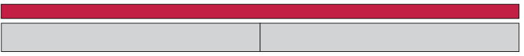
Soos jy kan sien, is die geel staaf
hier onder langer as 1 grysstok maar korter as 2 grysstokke..

Om te probeer om die geel staaf
akkuraat te meet, gaan ons een grysstok in ses gelyke dele
verdeel:

Elkeen van hierdie dele is dus een
sesde van 'n grysstok.
-
Dink jy ons kan
s die geel staaf is een en vier sesdes van 'n
grysstok lank?

-
Beskryf die lengte van die
blou staaf in woorde.
Hierdie grysstok is in sewe gelyke
dele verdeel:
Elke deel is een sewende van
'n grysstok.
-
Wat kan elk van die kleiner dele van die grysstokke hier onder
genoem word? Skryf jou antwoorde in woorde.
-

-

-

-

-

-

-
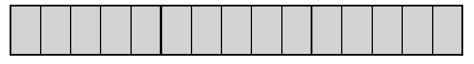
-

-
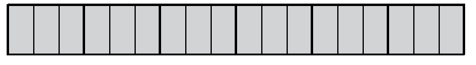
-

-
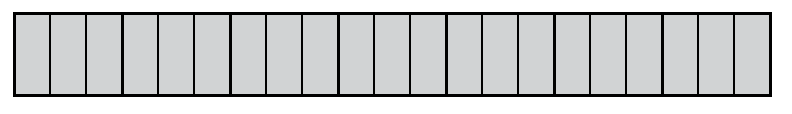
-

-

-

Hoe het jy geweet wat om die
klein dele te noem?
Skryf al jou
antwoorde op die volgende vrae in woorde.
-
-
Hoe lank is die boonste geel
staaf?

-
Hoe lank is die onderste geel staaf?
-
-
Hoe lank is die blou staaf onder aan
die vorige bladsy?
-
Hoe lank is die rooi staaf onder aan die
vorige bladsy?
-
-
Hoeveel twaalfdes van 'n grysstok is
dieselfde lengte as een sesde van 'n grysstok?
-
Hoeveel vier-en-twintigstes is dieselfde
lengte as een sesde van 'n grysstok?
-
Hoeveel vier-en-twintigstes is dieselfde
lengte as sewe twaalfdes van 'n grysstok?
-
-
Hoe lank is die boonste geel staaf
hier onder?

-
Hoe lank is die onderste geel staaf hier
bo?
-
Hoe lank is die blou staaf?
-
Hoe lank is die rooi staaf?
-
-
Hoeveel vyfdes van 'n grysstok is
dieselfde lengte as 12 twintigstes van 'n grysstok?
-
Hoeveel vierdes (of kwarte) van 'n
grysstok is dieselfde lengte as 15 twintigstes van 'n
grysstok?
BESKRYF DIESELFDE LENGTE OP
VERSKILLENDE MANIERE
Twee breuke kan dieselfde lengte
beskryf. Jy kan hier sien dat drie sesdes van 'n
grysstokdieselfde is as vier agtstes van 'n grysstok.
Wanneer twee breuke
dieselfde deel beskryf, sê
ons hulle is
ekwivalent.
-
-
Wat kan elke klein deeltjie op hierdie grysstok genoem word
?

-
Hoeveel agtiendes is een sesde van die
grysstok
?
-
Hoeveel agtiendes is een derde van die
grysstok
?
-
Hoeveel agtiendes is
vyf sesdes van die grysstok
?
-
-
Skryf (in woorde) die name van vier verskillende breuke
neer wat almal
ekwivalent is aan drie kwarte. Jy mag na die geel grysstokke op bladsy 154 kyk
om jou te help
.
-
Watter ekwivalente breuke vir twee derdes kan jy op die
geel grysstokke sien
?
-
Die inligting dat 2 derdes ekwivalent
is aan 4 sesdes, aan 6 negendes en aan
8 twaalfdes is in die tweede ry van die tabel hier onder geskryf. Voltooi die
ander rye
van die tabel op dieselfde manier. Die diagramme op bladsy 154 kan jou dalk help
.
|
derdes
|
vierdes
|
vyfdes
|
sesdes
|
agtstes
|
negendes
|
tiendes
|
twaalfdes
|
twintigstes
|
|
1
|
|
|
|
|
|
|
|
|
|
2
|
-
|
-
|
4
|
-
|
6
|
-
|
8
|
-
|
|
-
|
3
|
|
|
|
|
|
|
|
|
-
|
-
|
1
|
|
|
|
|
|
|
|
-
|
-
|
2
|
|
|
|
|
|
|
|
-
|
-
|
3
|
|
|
|
|
|
|
|
-
|
-
|
4
|
|
|
|
|
|
|
-
Voltooi hierdie tabel op dieselfde manier as
die tabel in vraag 3
|
vyfdes
|
tiendes
|
vyftiendes
|
twintigstes
|
vyf-en-
twintigstes
|
vyftigstes
|
honderdstes
|
|
1
|
|
|
|
|
|
|
|
2
|
|
|
|
|
|
|
|
3
|
|
|
|
|
|
|
|
4
|
|
|
|
|
|
|
|
5
|
|
|
|
|
|
|
|
6
|
|
|
|
|
|
|
|
7
|
|
|
|
|
|
|
-
Gebruik die grysstokke hier onder om
te wys dat 3 vyfdes en 9 vyftiendes ekwivalent
is. Teken met die vrye hand; jy hoef nie akkuraat te meet en teken nie
.
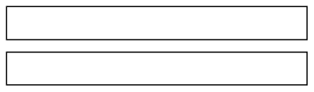
-
Voltooi hierdie tabelle op dieselfde manier as
die tabel in vraag 4
.
|
agtstes
|
sestiendes
|
24stes
|
|
1
|
|
|
|
2
|
|
|
|
3
|
|
|
|
4
|
|
|
|
5
|
|
|
|
6
|
|
|
|
7
|
|
|
|
8
|
|
|
|
9
|
|
|
|
24stes
|
sesdes
|
twaalfdes
|
18des
|
|
1
|
|
|
|
2
|
|
|
|
3
|
|
|
|
4
|
|
|
|
5
|
|
|
|
6
|
|
|
|
7
|
|
|
|
8
|
|
|
|
9
|
|
|
-
-
Hoeveel is vyf twaalfdes plus drie
twaalfdes
?
-
Hoeveel is vyf twaalfdes plus een kwart
?
-
Hoeveel is vyf twaalfdes plus drie kwarte
?
-
Hoeveel is een derde plus een kwart? Dit sal jou help as
jy met die ekwivalente
breuke in twaalfdes werk
.
6.2 Verskillende dele in verskillende kleure
Hierdie strook is in agt gelyke dele verdeel.
.
Vyf agtstes van die strook is rooi.
-
Watter deel van die strook hier bo is blou
?
-
Watter deel van hierdie strook is geel
?
-
Watter deel van die strook is rooi
?
-
Watter deel van hierdie strook is blou
ingekleur en watter deel is rooi ingekleur
?

-
-
Watter deel van hierdie strook is blou, watter deel is
rooi en watter deel is wit
?

-
Druk jou antwoord anders uit deur ekwivalente breuke te
gebruik
.
-
wee negendes van ’n strook, wat nie
hier gewys word nie, is blou en drie negendes is
groen. Die res van die strook is rooi. Watter deel van die strook is rooi
?
-
Watter deel van hierdie strook is geel,
watter deel is blou en watter deel is rooi
?

Die getal dele in ’n breuk word die teller
van die breuk genoem. Byvoorbeeld, die teller
in 5 sesdes is 5
.
Die soort dele in ’n breuk word die noemer genoem.
Dit is die naam van die dele
waarna verwys word en word bepaal deur die grootte van die deel. Byvoorbeeld,
sesdes is
die noemer in 5 sesdes
.
Om te tel beteken om vas te
stel hoeveel daar van iets is.
Die teller sê dus hoeveel dele
daar is
.
Om te benoem beteken
om ’n naam aan iets te gee.
Die noemer sê dus watter
soort of watter grootte deel
dit is
.
\( ^5/_6 \) is ’n kort manier om 5 sesdes te skryf
.
Ons kan ook skryf
\(\frac{5}{6}\)
Al skryf ons
\( ^5/_6 \) of \(\frac{5}{6}\),sê ons steeds “5 sesdes”
.
\( ^\text{ }/_6 \) en
\(\frac{\text{ }}{6}\) is kort maniere om sesdes te skryf
.
Die teller (die getal dele) word bokant
die lyn
van die breuk geskryf:
\(\frac{\textit{teller
}}{\text{...}}\)
Die noemer (die soort dele) word aangedui
deur ’n
getal wat onder die lyn geskryf word:
\(\frac{\text{...}}{\textit{noemer
}}\)
-
Oorweeg die breuk
Is die nuwe breuk ekwivalent aan drie kwartale. Dit kan geskryf word as
\(\frac{3}{4}\).
-
Vermenigvuldig beide die teller en die noemer met 2 om ’n
nuwe breuk te vorm.
Is die nuwe breuk ekwivalent aan
\(\frac{3}{4}\)? Jy kan dit op die diagram hier onder
kontroleer
.

-
Vermenigvuldig beide die teller en die noemer met 3 om
’n nuwe breuk te vorm.
Is die nuwe breuk ekwivalent aan
\(\frac{3}{4}\)?
-
Vermenigvuldig beide die teller en die noemer met 4 om ’n
nuwe breuk te vorm
. Is die nuwe breuk ekwivalent aan
\(\frac{3}{4}\)?
-
Vermenigvuldig beide die teller en die noemer met 6 om ’n
nuwe breuk te vorm.
Is die nuwe breuk ekwivalent aan
\(\frac{3}{4}\)?
6.3 Kombineer breuke
GROTER EN KLEINER DELE
Gertie is gevra om hierdie probleem op te los
:
’n Span padbouers het
\(\frac{8}{12}\)
km pad in een week gebou en
\(\frac{10}{12}\)
km pad in die
12
daaropvolgende week
. Wat is die totale lengte pad wat hulle in die twee weke gebou het
?
Sy het soos volg geredeneer om die probleem op te
los
:
\(\frac{8}{12}\) is agt twaalfdes en
\(\frac{10}{12}\) is tien twaalfdes, so altesaam is dit agtien
twaalfdes
Ek kan
\(\frac{18}{12}\) of “18 twaalfdes” skryf.
.
Ek kan ook sê twaalf twaalfdes van ’n kilometer is 1 kilometer, so
18 twaalfdes is 1 kilometer en 6 twaalfdes van ’n kilometer
.
Ek kan dit as
\(1\frac{6}{12}\) skryf. Dit is dieselfde as
\(1\frac{1}{2}\)km.
Gertie moes ook die volgende vraag beantwoord: Hoeveel is
\(4\frac{5 }{9 } + 2\frac{7}{9}\) ?
Sy het soos volg geredeneer om dit te beantwoord
:
\(4\frac{5 }{9}\) is 4 heles en 5 negendes, en
\(2\frac{7}{9}\) is 2 heles en 7 negendes
So altesaam is dit 6 heles en 12 negendes. Maar 12 negendes is 9
negendes (1 hele)
en 3 negendes, so ek kan sê dit is 7 heles en 3 negendes.
Ek kan dit as
\(7\frac{ 3}{ 9}\)skryf
.
-
Sou Gertie verkeerd wees as sy gesê het haar
antwoord is
\(7\frac{1 }{3 }\)?
-
Senthereng het
\(4\frac{7 }{ 12}\) bottels kookolie. Hy gee
\(1\frac{5 }{12 }\)
bottels vir sy vriend Willem.
Hoeveel olie het Senthereng oor
?
-
Margaret het
\(5\frac{5 }{8 }\)
bottels kookolie. Sy gee
\(3\frac{7 }{ 8}\)
bottels vir haar vriendin Naledi
. Hoeveel olie het Margaret oor
?
-
Bereken elk van die
volgende
:
- \(4\frac{2}{7} - 3\frac{6}{7}\)
- \(3\frac{6}{7} + \frac{3}{7}\)
- \(3\frac{6}{7} + 1\frac{4}{5}\)
- \(4\frac{3}{8} - 2\frac{4}{5}\)
- \(1\frac{3}{10} - \frac{2}{3}\)
- \(3\frac{5}{10} - 1\frac{1}{2}\)
- \(\frac{5}{8} + \frac{5}{8} + \frac{5}{8} + \frac{5}{8} + \frac{5}{8}\)
- \(6\frac{2}{5} + 2\frac{1}{4} -\frac{1}{2}\)
- \(\frac{5}{8} + \frac{5}{8} + \frac{5}{8} + \frac{5}{8} + \frac{5}{8} + \frac{5}{8} + \frac{5}{8} + \frac{5}{8} + \frac{5}{8} + \frac{5}{8} + \frac{5}{8} + \frac{5}{8} + \frac{5}{8}\)
- \(2\frac{4}{7} + 2\frac{4}{7} + 2\frac{4}{7} + 2\frac{4}{7} + 2\frac{4}{7} + 2\frac{4}{7} + 2\frac{4}{7} + 2\frac{4}{7}\)
- \((4\frac{2}{7} + 1\frac{4}{7}) - 2\frac{1}{3}\)
- \((2\frac{7}{10} + 3\frac{3}{5}) - (1\frac{2}{5} + 3\frac{7}{10})\)
-
Neo se verslag het vyf
hoofstukke gehad. Die eerste hoofstuk was ’n
\(\frac{3 }{4 }\) bladsy, die
tweede hoofstuk was
\(2\frac{1 }{2 }\)
bladsye, die derde hoofstuk was
\(3\frac{3 }{4 }\)bladsye, die vierde
hoofstuk was 3 bladsye en die vyfde hoofstuk was
\(1\frac{1 }{2 }\) bladsye lank. Hoeveel bladsye
was Neo se verslag in totaal
?
6.4 Tiendes en honderdstes (persentasies)
-
100 kinders kry elkeen 3 koekies. Hoeveel koekies is dit
altesaam
?
-
500 lekkers word gelykop tussen 100 kinders verdeel.
Hoeveel lekkers kry elke
kind
?
-
Die prent hier onder stel ’n strook
licorice voor. Die baie klein stukkies wat jy sien, kan
maklik op die dun lyntjies afgebreek word
Hoeveel baie klein stukkies word in die prent gewys
?

-
Gatsha het ’n spazawinkel. Hy verkoop stroke
licorice soos dié hier bo vir R2 elk
-
Hoeveel kos een baie klein stukkie licorice as jy dit by
Gatsha koop
?
-
Jonathan wil een vyfde van ’n strook licorice koop.
Hoeveel moet hy betaal
?
-
Batseba eet 25 baie klein stukkies. Watter deel van ’n
hele strook licorice is dit
?
Elke klein stukkie van die strook hier bo is
een honderdste van die hele strook.
.
-
-
Waarom kan elke klein stukkie een honderdste van
die hele strook genoem word
?
-
Hoeveel honderdstes is dieselfde as een tiende van die
strook
?
-
Gatsha verkoop dikwels stukke van
licorice-stroke aan klante. Hy gebruik ’n “kwarte-
merker” en ’n “vyfdes-merker” om die stukke presies te meet voordat hy dit
afsny. Sy
twee merkers word hier onder gewys, langs ’n hele strook licorice
.

-
Hoeveel honderdstes is dieselfde as twee vyfdes van die
hele strook
?
-
Hoeveel tiendes is dieselfde as
\(\frac{2 }{5 }\)
van die hele strook
?
-
Hoeveel honderdstes is dieselfde as
\(\frac{3 }{4 }\)
van die hele strook
?
-
Freddie het
\(\frac{60 }{100 }\) van ’n strook gekoop. Hoeveel vyfdes van ’n strook is dit
?
-
Jamey het ’n stukkie vir R1,60 gekoop. Watter gedeelte
van ’n strook het sy gekoop?
-
Gatsha, die eienaar van die
spazawinkel, het stukke geel
licorice aan ses kinders
verkoop. Hulle stukke word hier onder gewys
. Hoeveel (watter deel van ’n hele strook) het elkeen van hulle gekry
?

-
Die geel licorice wat hier bo gewys
word, kos R2,40 (240 sent) vir ’n strook. Hoeveel
moet elkeen van die kinders betaal? Rond die bedrae tot die naaste sent af.
-
-
Hoeveel is
\(\frac{1 }{100 }\) van 300 sent
?
-
Hoeveel is
\(\frac{7 }{100 }\) van 300 sent
?
-
Hoeveel is\(\frac{25}{100}\) van 300 sent
?
-
Hoeveel is
\(\frac{1}{4}\) van 300 sent
?
-
Hoeveel is
\(\frac{40}{100}\) van 300 sent?
-
Hoeveel is
\(\frac{2}{5}\) van 300 sent?
-
Verduidelik waarom jou antwoorde vir vraag
8(e) en 8(f) dieselfde is.
.
’n Ander woord vir
honderdste is persent.
In plaas daarvan om te sê
Miriam kry
32 honderdstes
van ’n strook licorice
,
kan ons sê
Miriam kry
32 persent
van ’n strook licorice
.
Die simbool vir persent is %
.
-
Hoeveel is 80% van elk van die volgende
?
-
R500
-
R480
-
R850
R2400
-
Hoeveel is 8% van elk van die bedrae in
vraag
10?
-
Hoeveel is 15% van elk van die bedrae in
vraag
10 ?
-
Boukoste van huise het met 20%
gestyg. Wat sal dit nou kos om ’n huis te bou
waarvan die boukoste voorheen R110 000 was
?
-
Die waarde van ’n motor daal met 30%
na een jaar. As die prys van ’n nuwe motor
R125 000 is, wat is die waarde van die motor na een jaar
?
-
Ondersoek watter noemers van breuke maklik na
magte van 10 herlei kan word
.
6.5 Duisendstes, honderdstes en tiendes
VELE GELYKE DELE
-
Vyftig kilogram suiker moet gelykop
tussen 1 000 vlugtelinge in ’n vlugtelingkamp
verdeel word. Hoeveel suiker moet elke vlugteling kry? Hou in gedagte dat 1 kg
gelyk
is aan 1 000 g. Jy kan jou antwoord in gram gee
.
-
Hoeveel is elk van die volgende
?
-
een tiende van
R6 000
een honderdste van
R6 000
-
een duisendste van
R6 000
tien honderdstes van
R6 000
-
100 duisendstes va
R6 000
sewe honderdstes van
R6 000
-
70 duisendstes van
R6 000
-
sewe duisendstes van
R6 000
-
Bereken
.
- \(\frac{3}{10} +\frac{5}{8}\)
- \(3\frac{3}{10} + 2\frac{4}{5}\)
- \(\frac{3}{10} + \frac{7}{100}\)
- \(\frac{3}{10} + \frac{70}{100}\)
- \(\frac{3}{10} + \frac{7}{1000}\)
- \(\frac{3}{10} + \frac{70}{1000}\)
-
Bereken
.
- \(\frac{3}{10} + \frac{7}{100} +\frac{4}{1000}\)
- \(\frac{3}{10} + \frac{70}{100} +\frac{400}{1000}\)
- \(\frac{6}{10} + \frac{20}{100} +\frac{700}{1000}\)
- \(\frac{2}{10} + \frac{5}{100} +\frac{4}{1000}\)
-
Ondersoek of elk van die stellings
hier onder waar is of nie. Gee redes vir jou
finale besluite
.
- \(\frac{1}{10} + \frac{23}{100} + \frac{346}{1000} = \frac{6}{10} + \frac{3}{100} + \frac{46}{1000}\)
- \(\frac{1}{10} + \frac{23}{100} + \frac{346}{1000} = \frac{7}{10} + \frac{2}{100} + \frac{6}{1000}\)
- \(\frac{1}{10} + \frac{23}{100} + \frac{346}{1000} = \frac{6}{10} + \frac{7}{100} + \frac{46}{1000}\)
- \(\frac{676}{1000} = \frac{6}{10} + \frac{7}{100} + \frac{6}{1000}\)
6.6 Breuk van ’n breuk
VORM DELE VAN DELE
-
-
Hoeveel is een vyfde van
R60?
-
Hoeveel is drie vyfdes van
R60?
-
Hoeveel is 7 tiendes van
R80? (As jy wil, kan jy eers uitwerk hoeveel 1 tiende van
R80
is.)
-
Die geldeenheid in die VSA is die
Amerikaanse dollar, in Brittanje is dit die pond, in
Wes-Europa die euro, en in Botswana die pula
.
-
Hoeveel is 2 vyfdes van 20 pula
?
-
Hoeveel is 2 vyfdes van 20 euro
?
-
Hoeveel is 2 vyfdes van 12 pula
?
-
Waarom was dit so maklik om 2 vyfdes van 20
te bereken, maar moeilik om 2 vyfdes van 12 te bereken
?
Daar is ’n manier wat dit maklik maak om iets soos
3 vyfdes van R4 te bereken. Jy
verander net die rande na sente
!
-
Bereken die volgende. Jy mag die rande na
sente verander om dit makliker te maak
.
-
3 agtstes van
R2,40
7 twaalfdes van
R6
-
2 vyfdes van
R21
5 sesdes van
R3
-
Jy gaan nou ’n paar berekeninge oor geheime
voorwerpe doen
.
-
Hoeveel is 3 tiendes van 40 geheime voorwerpe
?
-
Hoeveel is 3 agtstes van 40 geheime voorwerpe
?
-
Die geheime voorwerpe in vraag 6 is vyftigstes van ’n
rand
.
-
Hoeveel vyftigstes is 3 tiendes van 40 vyftigstes
?
-
Hoeveel vyftigstes is 5 agtstes van 40 vyftigstes
?
-
-
Hoeveel twintigstes van ’n kilogram is
dieselfde as
\(\frac{3 }{4 }\) van ’n kilogram
?
-
Hoeveel is een vyfde van 15 rand
?
-
Hoeveel is een vyfde van 15 twintigstes
van ’n kilogram
?
-
So, hoeveel is een vyfde van
\(\frac{3 }{4 }\) van ’n kilogram
?
-
-
Hoeveel is
\(\frac{1}{12}\) van 24 veertigstes van ’n geheime voorwerp
?
-
Hoeveel is
\(\frac{7 }{12}\) van 24 veertigstes van die geheime voorwerp
?
-
Stem jy saam dat die antwoorde op die
vorige vraag 2 veertigstes en 14 veertigstes is?
As jy nie saamstem nie, verduidelik waarom jy verskil
.
-
-
Hoeveel is
\(\frac{1 }{5 }\) van
80?
-
Hoeveel is
\(\frac{3 }{5 }\) van
80?
-
Hoeveel is
\(\frac{1 }{40 }\) van
80?
-
Hoeveel is
\(\frac{24 }{40 }\) van
80?
-
Verduidelik waarom
\(\frac{3 }{5 }\) van 80 dieselfde is as
\(\frac{24 }{40 }\) van
80.
-
Kyk weer na jou antwoorde vir vraag
9(b) en vraag 11(e). Hoeveel is
\(\frac{7 }{12 }\) van
\(\frac{3 }{5}\)? Verduidelik jou antwoord
.
TDie geheime voorwerp in
vraag 9 was ’n koevert met R160 daarin
.
Na die werk wat jy in vraag 9, 10 en 11 gedoen
het, weet jy
- dat
\(\frac{24 }{40 }\) en
\(\frac{3 }{5 }\)
maar net twee verskillende maniere is om dieselfde ding te beskryf en
- dat
\(\frac{7 }{12 }\) van
\(\frac{3 }{5 }\) dieselfde is as
\(\frac{7 }{12 }\) van
\(\frac{24 }{40 }\) .
Dit is maklik om
\(\frac{7 }{12 }\) van
\(\frac{24 }{40 }\) te bereken: 1 twaalfde van 24 is 2, so 7 twaalfdes van 24
is 14, so 7 twaalfdes van 24 veertigstes is 14 veertigstes
\(\frac{3 }{8 }\) van
\(\frac{2 }{3 }\) kan op dieselfde manier bereken word. Maar 1 agtste van
\(\frac{2 }{3 }\) is ’n effense
probleem, so dit sal beter wees om ’n ekwivalent van
\(\frac{2 }{3 }\). te gebruik. Die ekwivalent
moet só gekies word dat dit maklik is om 1 agtste daarvan te bereken. Daarom sal
dit
gaaf wees as die teller 8 kan wees.
.
\(\frac{8 }{12 }\) is ekwivalent aan
\(\frac{2 }{3 }\), so in plaas daarvan om
\(\frac{3 }{8 }\) van
\(\frac{2 }{3 }\) te bereken, kan ons
\(\frac{3 }{8 }\) van
\(\frac{8 }{12 }\) bereken
.
-
-
Bereken
\(\frac{3 }{8 }\) van
\(\frac{8 }{12 }\).
-
So, hoeveel is
\(\frac{3 }{8 }\) van
\(\frac{2 }{3 }\)?
-
Vervang elke
keer die tweede breuk met ’n gepaste ekwivalent en bereken dan
.
-
Hoeveel is
\(\frac{3 }{4 }\) van
\(\frac{5 }{8 }\)?
-
Hoeveel is
\(\frac{7 }{10}\) van
\(\frac{2 }{3 }\)?
-
Hoeveel is
\(\frac{2 }{3 }\) van
\(\frac{1 }{2 }\)?
-
Hoeveel is
\(\frac{3 }{5 }\) van \(\frac{3 }{5 }\)?
6.7 Vermenigvuldig met breuke
DELE VAN REGHOEKE, EN DELE VAN
DELE
-
-
Verdeel die reghoek aan die linkerkant in agtstes deur
vertikale lyne te trek.
Kleur die linkerkantse 3 agtstes van die reghoek liggies in
.
-
Verdeel die reghoek aan die regterkant in vyfdes deur
horisontale lyne te trek.
Kleur die boonste 2 vyfdes van die reghoek liggies in
.

-
Kleur 4 sewendes van die reghoek aan die linkerkant in.
-
Kleur 16 agt-en-twintigstes van die reghoek aan die
regterkant in
.
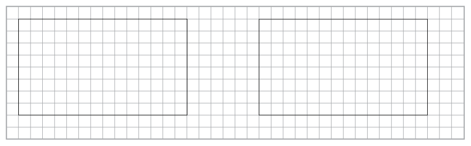
-
Watter deel van elke groot reghoek hier
onder is geel ingekleur
?
-
Watter deel van die
geel deel in die
regterkantse reghoek is gespikkeld?

-
In hoeveel vierkante is die hele reghoek
aan die regterkant verdeel
?
-
Watter deel van die hele reghoek aan die regterkant is
geel
en gespikkeld?
-
Teken diagramme op die rooster om jou
te help om die volgende te bereken:
-
\(\frac{3}{4}\) van
\(\frac{5}{8}\)
\(\frac{2}{3}\) van
\(\frac{4}{5}\)

Hier is iets wat jy met die breuke
\(\frac{3}{4}\) en
\(\frac{5}{8}\) kan doen
:
Vermenigvuldig die twee tellers en maak dit die
teller van ’n nuwe breuk
. Vermenigvuldig ook die twee noemers en maak dit die noemer van ’n nuwe breuk
\(\frac{3 \times 5}{4 \times 8} = \frac{15}{32}\).
-
Vergelyk die metode hier bo met dit
wat jy in vraag 14(a) van afdeling 6.6 en in
vraag 4(a) bo-aan hierdie bladsy gedoen het. Wat val jou op oor
\(\frac{3}{4}\)van
\(\frac{5}{8}\) en
\(\frac{3 \times 5}{4 \times 8} = \frac{15}{32}\)?
-
-
Alan het 5 hopies van 8 appels elk. Hoeveel appels is dit
in totaal
?
-
Sean het 10 hopies van 6 kwart appels elk. Hoeveel
appels is dit in totaal
?
In plaas daarvan om te sê
\(\frac{5}{8}\) van R40, kan ons
\(\frac{5}{8}\)R40 sê.
In plaas daarvan om te sê \(\frac{5}{8}\) van
\(\frac{2}{3}\) van ’n vloeroppervlak
, kan ons sê
\(\frac{5}{8} \times \frac{2}{3}\) van ’n
vloeroppervlak
.
-
Gebruik die diagramme hier onder om uit te
werk hoeveel elk van die volgende is
:
-
\(\frac{3}{10} \times \frac{5}{6}\)
\(\frac{2}{5} \times \frac{7}{8}\)

-
-
Doen die berekeninge
\(\dfrac{\text{teller
} \times \text{ teller
}}{\text{noemer
} \times \text{noemer
}}\) vir
\(\frac{3}{10}\) en
\(\frac{5}{6}\) en vergelyk die
antwoord met jou antwoord by vraag 7(a)
.
-
Doen dieselfde vir
\(\frac{2}{5}\) en
\(\frac{7}{8}\)
-
Doen die berekeninge
\(\dfrac{\text{teller
} \times \text{teller
}}{\text{noemer
}
\times \text{noemer
}}\) for
-
\(\frac{5}{6}\) en
\(\frac{7}{12}\)
- \(\frac{3}{4}\) en
\(\frac{2}{3}\)
-
Gebruik die diagramme hier onder om te
kontroleer of die formule
\(\dfrac{\text{teller
} \times \text{teller
}}{\text{noemer
} \times
\text{noemer
}}\) die korrekte antwoorde vir
\(\frac{5}{6} \times \frac{7}{12}\) en
\(\frac{3}{4} \times \frac{2}{3}\) lewer
.
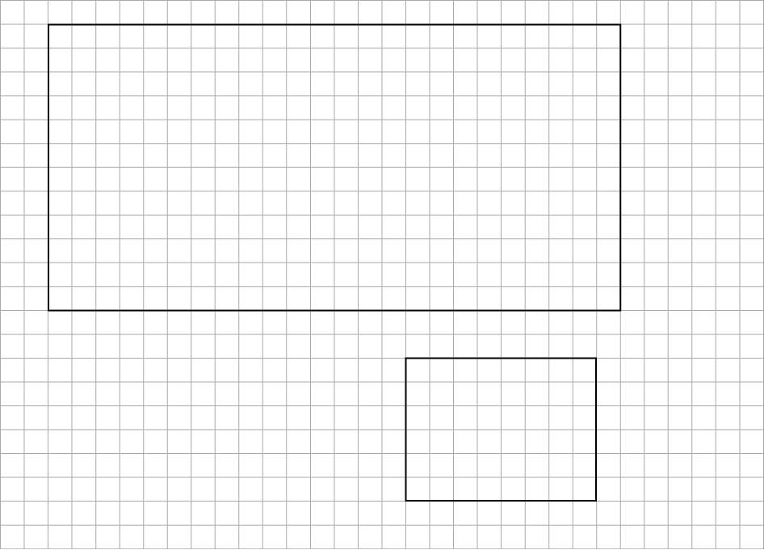
-
Bereken elk van die volgende
:
-
\(\frac{1}{2}\) van
\(\frac{1}{3}\) van
R60
\(\frac{2}{7}\) van
\(\frac{2}{9}\) van
R63
\(\frac{4}{3}\) van
\(\frac{2}{5}\) van
R45
-
-
John oefen gewoonlik elke dag ’n driekwartier lank
sokker. Vandag het hy egter net die helfte van sy gewone tyd geoefen. Hoe lank
het hy vandag geoefen
?
-
’n Sakkie grondbone weeg
\(\frac{3}{8}\)
van ’n kg. Wat weeg ’n
\(\frac{3}{4}\)
sakkie
?
-
Bereken die massa van
\(7\frac{3}{8}\)
pakkies suiker as 1 pakkie ’n massa van
\(\frac{3}{4}\)kg het
.
6.8 Orden en vergelyk breuke
-
Rangskik die volgende
van die kleinste tot die grootste
:
-
\( \frac{7}{16}\); \( \frac{3}{8}\); \( \frac{11}{24}\) ;\( \frac{5}{12}\); \( \frac{23}{48}\);
-
\( \frac{703}{1000}\); \( \frac{13}{20}\); \( \frac{7}{10}\); 73%; \( \frac{71}{100}\);
- Rangskik die volgende van die grootste tot die kleinste
:
-
\( \frac{41}{60}\); \( \frac{19}{30}\); \( \frac{7}{10}\) ;\( \frac{11}{15}\); \( \frac{17}{20}\);
-
\( \frac{23}{24}\); \( \frac{2}{3}\); \( \frac{7}{8}\); \(\frac{19}{20}\); \( \frac{5}{6}\);
-
Gebruik die simbole
\(=\), \(\gt\) van
\(\lt\) om die volgende waar te maak
:
-
\(\frac{7}{17}\) ☐ \(\frac{21}{51}\)
- \(\frac{1}{17}\) ☐ \(\frac{1}{19}\)
-
Herskryf elk van die
volgende in breuknotasie en doen dan die berekening.
Gee jou antwoord in breuknotasie en in woorde.
.
-
3 twintigstes
+ 5 twintigstes
-
5 twaalfdes
+ 11 twaalfdes
-
3 halwes
+ 5 kwarte
3 vyfdes
+ 3 tiendes
-
Voltooi die ekwivalente breuke.
.
-
\(\frac{5}{7} = \frac{☐}{49}\)
-
\(\frac{9}{11} = \frac{☐}{33}\)
-
\(\frac{15}{10} = \frac{3}{☐}\)
-
\(\frac{1}{9} = \frac{4}{☐}\)
-
\(\frac{45}{18} = \frac{☐}{2}\)
-
\(\frac{4}{5} = \frac{☐}{35}\)
-
Herskryf elke keer die breuke in woorde en doen
dan die berekening. Gee jou antwoord in woorde en in breuknotasie
.
- \(\frac{3}{10} + \frac{7}{30}\)
- \(\frac{2}{5} + \frac{7}{12}\)
- \(\frac{1}{100} + \frac{7}{10}\)
- \(\frac{3}{5} - \frac{3}{8}\)
- \(2\frac{3}{10} + 5\frac{9}{10}\)
-
Joe verdien R5 000 per maand. Sy salaris verhoog
met 12%. Wat is sy nuwe salaris
?
-
Ahmed het R7 500 per maand
verdien. Aan die einde van ’n sekere maand het
sy werkgewer sy salaris met 10% verhoog. Ongelukkig moes hy Ahmed se
salaris ’n
maand later weer met 10% verlaag. Wat was Ahmed se salaris toe gewees
?
-
Bereken elk van die
volgende en gee die antwoord in die eenvoudigste vorm
:
- \(\frac{13}{20} - \frac{2}{5}\)
- \(3\frac{24}{100} - 1\frac{2}{10}\)
- \(5\frac{9}{11} - 2\frac{1}{4}\)
- \(\frac{2}{3} + \frac{4}{7}\)
-
Evalueer
.
- \(\frac{1}{2} \times 9\)
- \(\frac{3}{5} \times \frac{10}{27}\)
- \(\frac{2}{3} \times 15\)
- \(\frac{2}{3} \times \frac{3}{4}\)
-
Bereken
.
- \(2\frac{2}{3} \times 2\frac{2}{3}\)
- \(8\frac{2}{5} \times 3\frac{1}{3}\)
- \((\frac{1}{3} +\frac{1}{2}) \times \frac{6}{7}\)
- \(\frac{2}{3} \times \frac{1}{2} \times \frac{3}{4}\)
- \(\frac{5}{6} + \frac{2}{3} \times \frac{1}{5}\)
- \(\frac{3}{4} - \frac{2}{5} \times \frac{5}{6}\)
Hoofstuk
7 Die desimale notasie vir
breuke
In hierdie hoofstuk gaan jy meer leer oor
desimale notasie en hoe dit met gewone breuke
en persentasies verband hou. Jy gaan ook leer hoe om desimale getalle te orden
en
vergelyk, en hoe om berekeninge met desimale getalle te doen
.
7.1 Ander simbole vir tiendes en honderdstes
tWEER TIENDES EN HONDERDSTES
...
-
-
Watter deel van die reghoek hier onder is geel ingekleur
?

-
Watter deel van die reghoek is rooi? Watter deel is blou?
Watter deel is groen en
watter deel is nie ingekleur nie
?
0,1 is ’n ander manier om
\(\frac{1}{10}\) te skryf en
\(0,01\) is ’n ander manier om
\(\frac{1}{100}\) te skryf
.
\(0,1\) en
\(\frac{1}{10}\) is verskillende notasies vir dieselfde getal
.
\(\frac{1}{10}\) word
(gewone) breuknotasie
) genoem
en
\(0,1\) word
desimale notasie
genoem
.
-
Skryf die antwoorde vir 1(a) en (b) in
desimale notasie
.
-
3 tiendes en 7 honderdstes van ’n
reghoek is rooi ingekleur, en 2 tiendes en
6 honderdstes van die reghoek is bruin ingekleur. Watter deel van die reghoek
(hoeveel tiendes en hoeveel honderdstes) is nie ingekleur nie? Skryf jou
antwoord
in breuknotasie en in desimale notasie
.
-
Maandag het Steve 3 tiendes en 7
honderdstes van ’n strook licorice geëet. Dinsdag
het Steve 2 tiendes en 5 honderdstes van die strook geëet. Hoeveel licorice het
hy
altesaam op Maandag en Dinsdag geëet? Skryf jou antwoord in breuknotasie en in
desimale notasie
.
-
Lebogang se antwoord vir vraag 4 is 5
tiendes en 12 honderdstes
. Susan se antwoord
is
6 tiendes en 2 honderdstes
. Wie is reg, of is hulle albei verkeerd
?
Dieselfde hoeveelheid kan op
verskillende maniere
uitgedruk word in tiendes en honderdstes.
Byvoorbeeld
, 3 tiendes en 17 honderdstes kan
uitgedruk word as 2 tiendes en 27 honderdstes of
4 tiendes en 7 honderdstes
.
Mense regoor die wêreld het ooreengekom om die
getal honderdstes in sulke stellings onder 10 te hou.
Dit beteken die normale manier om die hoeveelheid
hier bo uit te druk is
4 tiendes en 7 honderdstes
.
In desimale notasie geskryf, is 4 tiendes en
7 honderdstes 0,47
. Dit word gelees as
nul komma
vier sewe
en NIE
nul komma sewe-en-veertig nie
.
-
Wat is elk van die
volgende getalle in desimale notasie
?
- \(3\frac{7}{10}\)
- \(4\frac{19}{100}\)
- \(\frac{47}{10}\)
- \(\frac{3}{100}\)
... EN DUISENDSTES
\(0,001\) is ’n ander manier om
\(\frac{1}{1000}\) te skryf
.
-
Wat is die desimale
notasie vir elk van die volgende
?
- \(\frac{7}{1000}\)
- \(\frac{9}{1000}\)
- \(\frac{147}{1000}\)
- \(\frac{999}{1000}\)
-
Skryf die volgende
getalle in desimale notasie
:
- \(2+\frac{3}{10} + \frac{7}{100} + \frac{4}{1000}\)
- \(12 + \frac{1}{10} + \frac{4}{1000}\)
- \(2 + \frac{4}{1000}\)
- \(67\frac{123}{1000}\)
- \(34\frac{61}{1000}\)
- \(654\frac{3}{1000}\)
7.2 Persentasies en desimale getalle
HONDERDSTES, PERSENTASIES EN
DESIMALE
-
Die reghoek hier onder is in klein deeltjies
verdeel
.

-
Hoeveel van hierdie klein deeltjies is daar in die
reghoek? En in een tiende van
die reghoek
?
-
Watter deel van die reghoek is blou? Watter deel is
groen? Watter deel is rooi
?
In plaas van
6 honderdstes
, kan jy sê
6 persent
. Dit
beteken dieselfde
.
10 persent van die reghoek hier bo is geel
.
-
Gebruik die woord “persent” om te sê watter
deel van die reghoek is groen.
Watter deel is rooi
?
-
Watter persentasie van die reghoek is
blou? Watter persentasie is wit
?
Ons sê nie: “Hoeveel persent
van die reghoek is groen?” nie.
Ons sê: “Watter persentasie van
die reghoek is groen?”
Die simbool % word vir “persent” gebruik
.
In plaas
daarvan om “17 persent” te skryf, kan jy 17% skryf
.
Persent
beteken
honderdstes
. Die simbool % lyk ’n
bietjie soos die simbool
\(\frac{}{100}\)
-
-
Hoeveel is 1% van R400? (Met ander woorde: Hoeveel is
\(\frac{1}{100}\) of 0,01 van R400?)
-
Hoeveel is 37% van R400
-
Hoeveel is 37% van R700
?
-
-
25 appels word gelykop tussen 100 mense verdeel. Hoeveel
appels kry elkeen?
Skryf jou antwoord as ’n gewone breuk en as ’n desimale getal
.
-
Hoeveel is 1% (een honderdste) van 25
?
-
Hoeveel is 8% van 25
?
-
Hoeveel is 8% van 50? En hoeveel is 0,08 van 50
?
0,37 en 37% en
\(\frac{37}{100}\) is verskillende simbole vir
100
dieselfde ding:
37 honderdstes
.
-
Druk elk van die volgende op drie maniere uit
:
- in
desimale notasie
,
- in
persentasienotasie
en
- indien moontlik, in
gewone breuknotasie, deur honderdstes te gebruik
.
-
3 tiendes
7 3
7 honderdstes
-
37 honderdstes
-
7 tiendes
-
3 kwarte
-
7 agtstes
-
-
Hoeveel is 3 tiendes van R200 en 7 honderdstes van R200
altesaam
?
-
Hoeveel is
\(\frac{37}{100}\) van
R200?
-
Hoeveel is 0,37 van R200
?
-
En hoeveel is 37% van R200
?
-
Druk elk van die volgende op drie maniere
uit:
:
-
in
desimale notasie
,
-
in the
persentasienotasie
en
-
in the
gewone breuknotasie, deur honderdstes te gebruik
.
-
20 honderdstes
-
50 honderdstes
-
25 honderdstes
-
75 honderdstes
-
Jan eet ’n kwart van ’n waatlemoen. Watter persentasie
van die waatlemoen is dit
?
-
Sibu drink 75% van die melk in ’n bottel. Skryf 75% in
gewone breuknotasie
?
-
Jeminah gebruik 0,75 (7 tiendes en 5 honderdstes) van
die verf in ’n blik. Watter
persentasie van die verf gebruik sy
?
-
Die vloer van ’n groot vertrek word
hier regs
gewys. Watter deel van die vloer is met elk van
die vier kleure bedek? Druk jou antwoord op
vier maniere uit:
-
in gewone breuknotasie, met honderdstes
,
-
in desimale notasie
,
-
in persentasienotasie
,
en
-
indien moontlik
, in gewone breuknotasie as tiendes
en
honderdstes
(byvoorbeeld
\(\frac{3}{10} + \frac{4}{100}\)) .
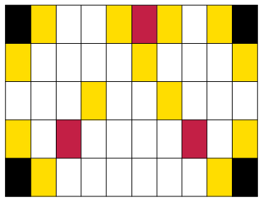
|
(a)
|
(b)
|
(c)
|
(d)
|
|
wit
|
|
|
|
|
|
rooi
|
|
|
|
|
|
geel
|
|
|
|
|
|
swart
|
|
|
|
|
7.3 Desimale afmetings
MEET OP ’N GETALLELYN
-
Lees elkeen van die lengtes by die
gemerkte punte (A tot D) op die getallelyne. Gee jou
antwoorde so akkuraat as moontlik in desimale notasie
.
-

-

-

-

-

-
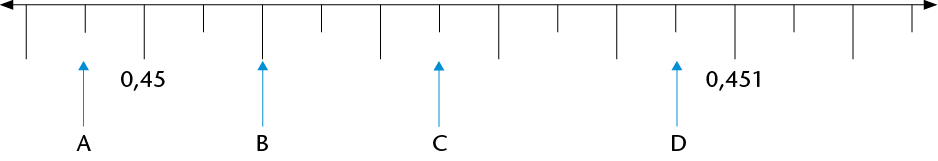
-

-
Dui die volgende getalle aan op die getallelyn
:
- 0,6
- 1,2
- 1,85
- 2,3
- 2,65
- 3,05
- 0,08
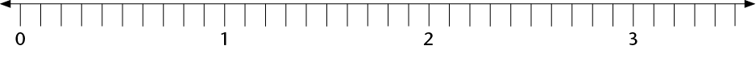
-
SDui die volgende getalle aan op die
getallelyn
:
- 3,06
- 3,08
- 3,015
- 3,047
- 3,005

7.4 Nog desimale begrippe
DESIMALE SPRONGE
-
Skryf die volgende tien getalle in die getallerye
en wys jou getallerye, sover moontlik, op
die getallelyne
.
-
0,2; 0,4; 0,6;
-
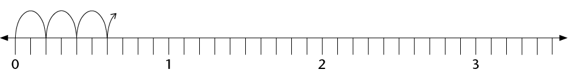
-
Hoeveel 0,2’s is daar in 1
?
-
Skryf 0,2 as ’n gewone breuk
.
-
0,3; 0,6; 0,9;
-

-
Hoeveel 0,3’s is daar in 3
?
-
Skryf 0,3 as ’n gewone breuk
.
-
-
0,25; 0,5;
-

-
Hoeveel 0,25’s is daar in 1
?
-
Skryf 0,25 as ’n gewone breuk
.
’n Sakrekenaar kan geprogrammeer word om
dieselfde bewerking oor en oor te doen.
Byvoorbeeld, druk
0,1 \(+\) \(=\) (moenie CLEAR
of enige
ander bewerking druk nie). Druk die
\(=\) knoppie
herhaaldelik en kyk wat gebeur
.
Die sakrekenaar tel in 0,1’s
.
-
Jy kan jou
antwoorde vir vrae 1 tot 3 met ’n sakrekenaar kontroleer. Programmeer die
sakrekenaar om jou te help
.
-
Skryf die volgende vyf getalle in die
getallery
:
9,3; 9,2; 9,1;
0,15; 0,14; 0,13; 0,12;
-
Programmeer jou sakrekenaar en kontroleer jou
antwoorde daarmee
.
PLEKWAARDE
-
Skryf elk van die volgende as een getal
:
- 2 + 0,5 + 0,07
- 2 + 0,5 + 0,007
- 2 + 0,05 + 0,007
- 5 + 0,4 + 0,03 + 0,001
- 5 + 0,04 + 0,003 + 0,1
- 5 + 0,004 +
0,3 + 0,01
Ons kan 3,784 in uitgebreide notasie skryf as
\(3,784 = 3 + 0,7 + 0,08 + 0,004\).Ons kan ook die dele soos volg benoem
:
- die 3 stel die
ene
voor
- die 7 stel die
tiendes
voor
- die 8 stel die
honderdstes
voor
- die 4 stel die
duisendstes
voor
Ons sê: die
waarde
van die 7 is 7 tiendes maar die
plekwaarde
van die 7 is tiendes, want enige syfer
in daardie plek
sal die getal tiendes voorstel
.
Byvoorbeeld, in 2,536 is die
waarde
van die 3 dus
0,03 en sy
plekwaarde
is honderdstes, want die
waarde van die
plek waar dit staan
is honderdstes
.
-
Skryf nou die waarde (in desimale
notasie) en die plekwaarde van elk van die
onderstreepte syfers neer.
.
- 2,345
- 4,678
- 1,953
- 34,856
- 564,34
- 0,987
7.5 Orden en vergelyk desimale getalle
VAN GROOTSTE NA KLEINSTE EN
KLEINSTE NA GROOTSTE
-
Orden die volgende getalle van grootste na
kleinste. Verduidelik jou metode
.
0,8; 0,05; 0,5; 0,15; 0,465; 0,55; 0,75; 0,4;
0,62
-
Hier onder is die uitslae van ’n paar
items in die 2012 Olimpiese Spele in Londen.
Rangskik die uitslae van eerste tot laaste plek. Gebruik die laaste kolom
daarvoor
.
-
Vroue: Verspring – Eindronde
|
|
|
|
|
|
Anna
Nazarova
|
RUS
|
6,77
m
|
|
|
Brittney
Reese
|
VSA
|
7,12
m
|
|
|
Elena
Sokolova
|
RUS
|
7,07
m
|
|
|
Ineta
Radevica
|
LAT
|
6,88
m
|
|
|
Janay
DeLoach
|
VSA
|
6,89
m
|
3rd
|
|
Lyudmila
Kolchanova
|
RUS
|
6,76
m
|
|
-
Vroue: 400 m-hekkies – Eindronde
|
|
|
|
|
|
Georganne
Moline
|
VSA
|
53,92
s
|
|
|
Kaliese
Spencer
|
JAM
|
53,66
s
|
4th
|
|
Lashinda
Demus
|
VSA
|
52,77
s
|
|
|
Natalya
Antyukh
|
RUS
|
52,70
s
|
|
|
T'erea
Brown
|
VSA
|
55,07
s
|
|
|
Zuzana
Hejnová
|
CZE
|
53,38
s
|
|
-
Mans: 110 m-hekkies – Eindronde
|
|
|
|
|
|
Aries
Merritt
|
VSA
|
12,92
s
|
|
|
Hansle
Parchment
|
JAM
|
13,12
s
|
|
|
Jason
Richardson
|
VSA
|
13,04
s
|
|
|
Lawrence
Clarke
|
GBR
|
13,39
s
|
|
|
Orlando
Ortega
|
CUB
|
13,43
s
|
|
|
Ryan
Brathwaite
|
BAR
|
13,40
s
|
|
-
Men: Javelin -
Final
|
|
|
|
|
|
Andreas
Thorkildsen
|
NOR
|
82,63
m
|
|
|
Antti
Ruuskanen
|
FIN
|
84,12
m
|
|
|
Keshorn
Walcott
|
TRI
|
84,58
m
|
|
|
Oleksandr
Pyatnytsya
|
UKR
|
84,51
m
|
|
|
Tero
Pitkämäki
|
FIN
|
82,80
m
|
|
|
Vítezslav Veselý
|
CZE
|
83,34
m
|
|
-
Gee ’n getal wat tussen die twee gegewe
getalle voorkom. (Dit beteken jy kan enige
getal gee wat enige plek tussen die twee getalle lê.)
-
3,5 en
3,7
- 3,9 en
3,11
- 3,1 en
3,2
-
Hoeveel getalle is daar tussen 3,1 en 3,2
?
-
Vul
<, > of
= in.
- 0,4 ☐ 0,52
- 0,4 ☐ 0,32
- 2,61 ☐ 2,7
- 2,4 ☐ 2,40
- 2,34 ☐ 2,567
- 2,34 ☐ 2,251
7.6 Afronding
Net soos telgetalle tot die naaste 10, 100 of 1
000 afgerond kan word, kan desimale getalle
tot die naaste telgetal of tot een, twee, drie, ens. syfers na die komma
afgerond word.
’n Getal word afgerond tot ’n getal waarvan die waarde die naaste is aan sy eie
waarde
voor afronding. So word 13,24 afgerond tot een desimale plek 13,2 en 13,26
afgerond tot
een desimale plek 13,3. ’n Getal waarvan die laaste syfer ’n 5 is, is ewe ver
van die ander
twee getalle waartoe dit afgerond kan word. Sulke getalle word tot die grootste
getal
afgerond. Byvoorbeeld: 13,15 afgerond tot een desimale plek word 13,2
.
SÊ DIT NAASTENBY MAAR NIE PRESIES NIE
-
Rond elk van die volgende getalle af tot die
naaste telgetal
:
7,6; 18,3; 204,5; 1,89; 0,9; 34,7; 11,5; 0,65
-
Rond elk van die volgende getalle af tot een
desimale plek
:
7,68; 18,93; 21,47; 0,643; 0,938; 1,44; 3,81
-
Rond elk van die volgende getalle af tot twee
desimale plekke
:
3,432; 54,117; 4,809; 3,762; 4,258; 10,222; 9,365;
299,996
ROND AF OM JOU TE HELP BEREKEN
-
John en drie van sy broers verkoop ’n
ou fiets vir R44,65. Hoe kan die broers die geld
regverdig verdeel
?
-
’n Man koop 3,75 m hout teen R11,99 per
meter. Wat kos die hout hom
?
-
Skat die antwoorde van elk van die volgende
deur die getalle af te rond
:
- \(89,3 \times 3,8\)
- \(227,3 + 71,8 - 28,6\)
7.7 Optel en aftrek met desimale getalle
HOOFREKENE
-
Voltooi die getalleketting
.

Wanneer jy desimale getalle optel of
aftrek, kan jy
hulle na gewone breuke verander om die berekening
makliker te maak
.
Byvoorbeeld:
\(0,4 + 0,5 \\ = \frac{4}{10} + \frac{5}{10} \\ = \frac{9}{10} \\ = 0,9\)
-
Bereken elk van die volgende
:
- \(0,7 + 0,2\)
- \(0,7 + 0,4\)
- \(1,3 + 0,8\)
- \(1,35 + 0,8\)
- \(0,25 + 0,7\)
- \(0,25 + 0,07\)
- \(3 - 0,1\)
- \(3 - 0,01\)
- \(2,4 - 0,5\)
PROBLEME UIT DIE WERKLIKE LEWE
-
Die eienaar van ’n internetkafee kyk
aan die einde van die dag na haar bankstaat.
Die volgende bedrae is in haar rekening inbetaal: R281,45; R39,81; R104,54 en
R9,80.
Hoeveel geld is daardie dag in haar rekening inbetaal
?
-
Aan die begin van ’n reis wys die
odometer in ’n motor: 21589,4. Aan die einde van
die reis wys die odometer: 21763,7. Watter afstand is afgelê
?
-
By ’n atletiekbyeenkoms hardloop ’n
atleet die 100 m-wedloop in 12,8 sekondes.
Die aankondiger sê dat die atleet die vorige rekord met 0,4 sekondes verbeter
het.
Wat was die vorige rekord
?
-
In ’n branderrykompetisie gee vyf
beoordelaars vir elke deelnemer ’n punt uit 10.
Die hoogste en die laagste punte word geïgnoreer en die ander drie punte word
bymekaargetel. Werk elke deelnemer se finale puntetelling uit en plaas die
deelnemers in volgorde van eerste tot laaste
.
A: 7,5; 8; 7; 8,5; 7,7;
B: 8,5; 8,5; 9,1; 8,9;
8,7
C: 7,9; 8,1; 8,1; 7,8; 7,8;
D: 8,9; 8,7; 9; 9,3;
9,1
-
’n Pyp word akkuraat gemeet. AC =
14,80 mm en
AB = 13,97 mm.
Hoe dik is die pyp (BC)?
-
Mevrou Mdlankomo koop drie pakkies
maalvleis.
Die pakkies weeg 0,356 kg, 1,201 kg en 0,978 kg onderskeidelik.
Wat weeg hulle altesaam
?
7.8 Vermenigvuldiging en desimale getalle
DIE MAG VAN TIEN
-
-
Voltooi die vermenigvuldigingstabel
.
|
|
|
|
|
|
|
|
|
|
|
6
000
|
|
60
|
|
|
0,06
|
|
|
|
|
640
|
|
|
|
|
|
|
|
|
|
|
|
0,05
|
|
|
|
|
4
780
|
|
47,8
|
|
|
|
|
|
|
41
200
|
|
|
|
|
|
|
-
Is dit korrek om te sê “vermenigvuldiging maak groter”?
Wanneer maak
vermenigvuldiging groter
?
-
Formuleer reëls vir vermenigvuldiging met 10; 100; 1 000;
0,1; 0,01 en 0,001.
Kan jy die reëls verduidelik
?
-
Gebruik nou jou reëls om elk van die volgende te bereken
:
\(0,5 \times 10\)
\(0,3 \times 100\)
\(0,42 \times 10\)
\(0,675 \times 100\)
-
Voltooi die delingstabel.
|
|
|
|
|
|
|
|
|
|
|
|
|
|
6
|
0,6
|
0,06
|
|
|
|
|
|
64
|
6,4
|
|
|
|
|
|
|
|
|
|
|
0,005
|
|
|
|
|
|
47,8
|
|
|
|
|
|
|
|
4
120
|
|
|
|
|
|
-
Is dit korrek om te sê “deling maak kleiner”? Wanneer
maak deling kleiner
?
-
Formuleer reëls vir deling met 10; 100; 1 000; 0,1; 0,01
en 0,001. Kan jy die reëls verduidelik
?
-
Gebruik nou jou reëls om elk van die volgende te bereken
:
\(0,5 \div 10\)
\(0,3 \div 100\)
\(0,42 \div 10\)
-
Voltooi die volgende
:
-
Vermenigvuldiging met 0,1 is dieselfde as
deling deur
-
Deling deur 0,1 is dieselfde as
vermenigvuldiging met
Bespreek dit nou met ’n maat of verduidelik
vir hom of haar waarom dit so is
.
-
Vul die ontbrekende getalle in
:

Wat beteken vermenigvuldiging van ’n desimale getal met ’n telgetal
?
Wat beteken iets soos
\(4 \times 0,5\)
?
Wat beteken iets soos
\(0,5 \times 4\)
?
\(4 \times 0,5\) beteken 4 groepe van
\(\frac{1}{2}\), wat
\(\frac{1}{2} + \frac{1}{2} + \frac{1}{2} +
\frac{1}{2}\), is, wat 2 is
.
\(0,5 \times 4\) beteken
\(\frac{1}{2}\) van 4, wat 2 is
.
Hier is ’n voorbeeld uit die werklike
lewe
:
\[\begin{align} 6 \times 0,42 \text{ kg} &= 6 \times \frac{42}{100}\\
&=(6 \times 42) \div 100\\
& =252 \div 100\\
&= 2,52 \text{ kg} \end{align}
\]
Wat eintlik gebeur is dat ons 6 × 0,42 tot die
produk van twee telgetalle herlei, die
berekening doen en dan weer die antwoord terug na desimale getalle herlei (÷
100)
.
VERMENIGVULDIGING VAN DESIMALE MET TELGETALLE
-
Bereken elk van die volgende. Gebruik
breuknotasie om jou te help
.
- \(0.3 \times 7\)
- \(0.21 \times 91\)
- \(8 \times 0.4\)
-
Skat eers die antwoorde vir elk van die
volgende en bereken dan
:
- \(0,4 \times 7\)
- \(0,55 \times 7\)
- \(12 \times 0,12\)
- \(0,601 \times 2\)
-
Maak ’n reël vir vermenigvuldiging met
desimale. Verduidelik jou reël vir ’n maat
.
Wat beteken vermenigvuldiging van ’n desimaal met ’n desimaal
?
Byvoorbeeld, wat beteken
\(0,32 \times
0,87\) ?
As jy 0,32 m
lint koop en elke meter kos R0,87, kan jy dit skryf as
\(0,32 \times 0,87\).
\[\begin{align} 0.32 \times 0.87 &= \frac{32}{100} \times \frac{87}{100}
&\text{ [Skryf as gewone breuke
]} \\
& = \frac{32 \times 87}{10000}& \text{ [Vermenigvuldiging van twee breuke
]}\\
& =\frac{2784}{10000} &\text{ [Die produk van die telgetalle
} 32 \times 87\text{]}\\
&=0.2784 &\text{ [Herlei terug na ’n desimaal deur die produk deur 10 000
te deel
]} \end{align}\]
Die produk van twee desimale word dus herlei na
die produk van telgetalle en dan weer
terugherlei tot ’n desimaal
.
Die produk van twee desimale
getalle en die produk van twee telgetalle met dieselfde
syfers verskil bloot ten opsigte van die plekwaardes van die produkte, m.a.w.
die posisie
van die desimale komma. Dit kan ook deur skatting bepaal en gekontroleer word
.
VERMENIGVULDIGING VAN DESIMALE MET DESIMALE
-
Bereken elk van die volgende. Gebruik
breuknotasie om jou te help
.
- \(0,6 \times 0,4 \)
- \( 0,06 \times 0,4\)
- \( 0,06 \times 0,04\)
Mandla gebruik hierdie metode om desimale met
desimale te vermenigvuldig
:
\[\begin{align} 0,84 \times 0,6 &= (84 \div 100) \times (6 \div
10) \\
& = (84 \times 6) \div (100 \times 10)\\
& = 504 \div 1 000\\
& = 0,504 \end{align}\]
-
Bereken die volgende deur Mandla se metode te
gebruik
:
- \( 0,4 \times 0,7 \)
- \( 0,4 \times 7\)
- \( 0,04 \times 0,7\)
7.9 Deling en desimale getalle
Kyk sorgvuldig na die volgende drie metodes van
berekening
:
-
\(0,6 \div 2 = 0,3 \text{ [6 tiendes
} \div 2 = 3 \text{ tiendes
]}\)
-
\[\begin{align}12,4 \div 4& = 3,1 &\text{ [(12 ene
} + 4 \text{ tiendes
}) \div 4\text{]}\\
& = (12 \text{ ene
} \div 4) + (4 \text{ tiendes} \div 4)& \\
& = 3 \text{ ene
} + 1 \text{ tiendes}&\\
& = 3,1&\end{align}\]
-
\[\begin{align} 2,8 \div 5 &= 28 \text{ tiendes }\div 5&\\
&= 25 \text{ tiendes } \div 5 \text{ en } 3 \text{ tiendes }\div 5&\\
& = 5 \text{ tiendes en }(3 \text{ tiendes } \div 5) &\text{ [3 tiendes kan
nie deur 5 gedeel word nie
]} \\
&= 5 \text{ tiendes en } (30 \text{ honderdstes
} \div 5) &\text{ [3
tiendes = 30 honderdstes
]}\\
& = 5 \text{ tiendes en } 6 \text{ honderdstes
}&\\
& = 0,56 &\end{align}\]
DEEL DESIMALE DEUR TELGETALLE
-
Voltooi die volgende
.
-
\[\begin{align} 8.4 \div 2 &= (8 \text{______} + 4 \text{ tiendes
}) \div 2\\
&= (8 \text{______} \div 2) + (\text{______})\\
&= 4\text{______} + \text{______ tiendes
}\\
&= \text{______} \end{align}\]
-
\[\begin{align} 3.4 \div 4 & = (3 \text{ ene
} + 4 \text{ tiendes
}) \div 4\\
&= (32 \text{______} + 20 \text{______} \div 4\\
& =(\text{______} \div 4) + (\text{______} \div 4)\\
& = \text{______} + \text{______ honderdstes
}\\
& =\text{______} \end{align}\]
-
Bereken elk van die volgende op die kortste
moontlike manier
:
- \(0,08 \div 4 \)
- \( 14,4 \div 12\)
- \( 8,4 \div 7 \)
- \( 4,5 \div 15 \)
- \( 1,655 \div 5 \)
- \( 0,225 \div 25 \)
-
’n Kruidenier koop 15 kg piesangs vir R99,90.
Wat kos die piesangs per kilogram
?
-
Indien
\(26,8 \div 4 = 6,7\).skryf die antwoorde vir die volgende neer sonder
berekening
:
- \(268 \div 4\)
- \(0,268 \div 4 \)
- \( 26,8 \div 0,4\)
-
Indien
\(128 \div 8 = 16\). skryf die antwoorde vir die volgende neer sonder berekening
:
- \( 12,8 \div 8 \)
- \( 1,28 \div 8\)
- \( 1,28 \div 0,8 \)
-
Sue betaal R18,60 vir 0,6 meter materiaal.
Wat kos een meter materiaal
?
-
John koop 0,45 m ketting. Die ketting
kos R20 per meter. Wat sal John betaal vir die
ketting wat hy koop
?
-
Jy mag ’n sakrekenaar gebruik vir
hierdie vraag
.
Anna koop ’n pakkie maalvleis. Dit
weeg 0,215 kg. Die prys vir die maalvleis is R42,95
per kilogram. Wat betaal sy vir haar pakkie maalvleis? (Gee ’n sinvolle
antwoord.)
9
Perimeter and area of 2D shapes
You will remember from Grade 6
that perimeter is the distance around the outermost border of
something. Area is the size of a flat surface of something. In
this chapter, you will learn to use different formulae to
calculate the perimeter and area of squares, rectangles and
triangles. You will solve problems using these formulae, and
you will also learn how to convert between different units of
area.
9.1 Perimeter of polygons
The perimeter of a shape is
the total distance around the shape, or the lengths of its
sides added together. Perimeter (P) is measured in units
such as millimetres (mm), centimetres (cm) and metres (m).
Measuring perimeters
-
-
Use a compass and/or a ruler to
measure the length of each side in figures A to C. Write the
measurements in mm on each figure.
-
Write down the perimeter of each
figure.

-
The following shapes consist
of arrows that are equal in length.
-
What is the perimeter of each shape in
number of arrows?
-
If each arrow is 30 mm long, what is the
perimeter of each shape in mm?
9.2 Perimeter formulae
If the sides of a square are all
\(s\) units long:
\[\begin{align} \textbf{Perimeter of square} &= s+ s+s+s\\
&= 4 \times s\\
\text{or } P &= 4s\end{align}\]
If the length of a rectangle is
\(l\) units and the
breadth (width) is \(b\) units:
\[\begin{align} \textbf{Perimeter of rectangle} &= l+l+b+b\\
&=2\times l + 2 \times b\\
\text{or } P&=2(l+b) \end{align}\]
A triangle has three sides, so:
\[\begin{align} \textbf{Perimeter of triangle } &= s_1 + s_2 + s_3\\
\text{or } P &= s_1 + s_2 + s_3 \end{align}\]
Applying perimeter formulae
-
Calculate the perimeter of a
square if the length of one of its sides is 17,5 cm.
-
One side of an equilateral
triangle is 32 cm. Calculate the triangle's perimeter.
-
Calculate the length
of one side of a square if the perimeter of the square is 7,2
m. (Hint: \(4s\ =\) ? Therefore \(s =\) ?)
-
Two sides of a
triangle are 2,5 cm each. Calculate the length of the third
side if the triangle's perimeter is 6,4 cm.
-
A rectangle is 40 cm long and
25 cm wide. Calculate its perimeter.
-
Calculate the perimeter of a
rectangle that is 2,4 m wide and 4 m long.
-
The perimeter of a rectangle
is 8,88 m. How long is the rectangle if it is 1,2 m wide?
-
Do the necessary
calculations in your exercise book in order to complete the
table. (All the measurements refer to rectangles.)
|
|
|
|
|
(a)
|
74
mm
|
30
mm
|
|
|
(b)
|
25
mm
|
|
90
mm
|
|
(c)
|
|
1,125
cm
|
6,25
cm
|
|
(d)
|
5,5
cm
|
|
22
cm
|
|
(e)
|
7,5
m
|
3,8
m
|
|
|
(f)
|
|
2,5
m
|
12 m
|
9.3 Area and square units
The area of a shape is the
size of the flat surface surrounded by the border (perimeter)
of the shape.
Usually, area (A) is measured in square units,
such as square millimetres (mm2), square centimetres
(cm2) and square
metres (m2).
Square units to measure
area
-
Write down the area of
figures A to E below by counting the square units. (Remember to
add halves or smaller parts of squares.)
A is ______ square
units.
B is ______ square
units.
C is ______ square
units.
D is ______square
units.
E is ______ square
units.
-
Each square in the grid below measures 1 cm2 (1 cm \(\times\) 1 cm).
-
What is the area of the
shape drawn on the grid?
-
On the same grid, draw two shapes of
your own. The shapes should have the same area, but different
perimeters.

Conversion of units
The figure below shows a
square with sides of 1 cm.The area of the square is one square
centimetre (1 cm2).
How many squares of 1 mm by 1 mm (1
mm2) would fit into
the 1 cm2
square? ______ Complete: 1 cm2 = _______ mm2
To change cm2 to
mm:2
1 cm=2 1 cm \(\times\) 1 cm
= 10 mm \(\times\) 10 mm
= 100 mm2
Similarly, to change
mm2 to cm2:
1 mm2 = 1 mm \(\times\) 1 mm
= 0,1 cm \(\times\) 0,1 cm
= 0,01 cm2
We can use the same method to convert
between other square units too. Complete:
|
From
m2 to cm2:
\[ \begin{align} 1 \text {m}^2 &= 1 \text{ m} \times 1 \text{ m} \\
&=\text{______ cm} \times \text{______ cm}\\
&=\text{______ cm}^2 \end{align}\]
|
From
cm2 to m2:
\[ \begin{align} 1 \text {cm}^2 &= 1 \text{ cm} \times 1 \text{ cm} \\
&=0.01 \text{ m} \times 0.01\text{ m}\\
&=\text{______ m}^2 \end{align}\]
|
So, to convert between
m2,
cm2 and
mm2 you do the
following:
- cm2 to mm2 \(\rightarrow\) multiply by 100
- m2 to cm2 \(\rightarrow\) multiply by 1000
- mm2 to cm2 \(\rightarrow\) divide by 100
- cm2 to m2 \(\rightarrow\) divide by 10000
Do the necessary calculations in your
exercise book. Then fill in your answers.
-
-
15 m2 = ______ cm2
- 5 cm2 = ______ mm2
- 20 cm2 = ______ m2
- 20 mm2 = ______ cm2
-
- 25 m2 = ______ cm2
- 240 000 cm2 = ______ m2
- 460,5 mm2 = _______ cm2
- 0,4 m2 = ______ cm2
- 12 100 cm2 = ______ m2
- 2,295 cm2 = ______ mm2
9.4 Area of squares and rectangles
Investigating the area of
squares and rectangles
-
Each of the following
four figures is divided into squares of equal size, namely 1 cm
by 1 cm.
-
Give the area of each
figure in square centimetres (cm2):
Area of A:
Area of B:
Area of C:
Area of D:
-
Is there a shorter method to work out
the area of each figure? Explain.
-
Figure BCDE is a rectangle and
MNRS is a square.

-
How
many cm2 (1 cm
\(\times\) 1 cm) would fit into rectangle BCDE?
-
How
many mm2 (1 mm
\(\times\) 1 mm) would fit into rectangle BCDE?
-
What is the area of square MNRS in cm2?
-
What is the area of square
MNRS in mm2?
-
Figure KLMN is a square with
sides of 1 m.
-
How many squares with
sides of 1 cm would fit along the length of the square?
-
How many squares with
sides of 1 cm would fit along the breadth of the square?
-
How many squares
(cm2) would
therefore fit into the whole square?
-
Complete: 1 m2 = ______ cm2
A quick way of calculating
the number of squares that would fit into a rectangle is to
multiply the number of squares that would fit along its
length by the number of squares that would fit along its
breadth.
Formulae: Area of rectangles and
squares
In the rectangle on the
below:
\[ \begin{align} \text{Number of squares} &= \text{Squares along the length} \times \text{Squares along the breadth} \\
&= 6 \times 4 \\
&= 24 \end{align}\]

From this we can deduce the
following:
\[ \begin{align} \textbf{Area of rectangle} &= \text{Length of rectangle} \times \text{Breadth of rectangle}\\
A &= l \times b\end{align}\]
where \(A\) is the area
in square units, \(l\) is the length and \(b\) is the
breadth)
\[ \begin{align} \textbf{Area of square} &= \text{Length of side} \times \text{Length of side}\\
A &= l \times l \\ &=l^2 \end{align}
\]
where \(A\) is the area
in square units, and \(l\) is the length of a side)
The units of the values used in the
calculations must be the same. Remember:
- 1 m = 100
cm and 1 cm = 10 mm
- 1
cm2 = 1 cm \(\times\)
1 cm = 10 mm \(\times\)
10 mm = 100 mm2
- 1
m2 = 1 m \(\times\)
1
m = 100 cm \(\times\)
100 cm = 10 000 cm2
- 1
mm2 = 1 mm \(\times\)
1 mm = 0,1 cm \(\times\)
0,1 cm = 0,01 cm2
- 1
cm2 = 1 cm \(\times\)
1 cm = 0,01 m \(\times\)
0,01 m = 0,0001 m2
Examples
-
Calculate the area of
a rectangle with a length of 50 mm and a breadth of 3 cm. Give
the answer in cm2.
Solution:
\[ \begin{align} \text{Area of rectangle} & = l \times b & & &\\
&= (50 \times 30) \text{ mm}^2& \text{ or } A &= (5 \times 3)\text{ cm}^2\\
&= 1 500 \text{ mm}^2 & \text{ or } & = 15 \text{ cm}^2
\end{align}
\]
-
2. Calculate the area of a square
bathroom tile with a side of 150 mm.
Solution:
\[ \begin{align} \text{Area of square tile} &= l \times l \\
&=(150 \times 150) \text{ mm}^2\\
&= 22500\text{ mm}^2\\
\end{align}\]
The area is therefore 22 500
mm2 (or 225
cm2).
-
3. Calculate the length of a
rectangle if its area is 450 cm2 and its width is 150 mm.
Solution:
\[ \begin{align} \text{Area of rectangle} & = l \times b & & &\\
450 &= l \times 15 & & &\\
30 \times 15 &= l \times 15 & \text{ or } 450 \div 15& = l\\
30 = l & & 30 &= l\\
\end{align}
\]
The length is therefore 30 cm (or
300 mm).
Applying the formulae
-
Calculate the area of each of
the following shapes:
-
a rectangle with sides of 12 cm and 9
cm
-
a square with sides of 110 mm (answer in
cm2)
-
a rectangle with sides of 2,5 cm and 105
mm (answer in mm2)
-
a rectangle with a length of 8 cm and a
perimeter of 24 cm
-
A rugby field has a length of
100 m (goal post to goal post) and a breadth of 69 m.
-
What is the area of the field (excluding
the area behind the goal posts)?
-
What would it cost to plant new grass on
that area at a cost of R45/m2?
-
Another unit for area is the hectare
(ha). It is mainly used for measuring land. The size of 1 ha is
the equivalent of 100 m \times 100 m. Is a rugby field greater
or smaller than 1 ha? Explain your answer.
-
Do the necessary
calculations in your exercise book in order to complete the
table. (All the measurements refer to rectangles.)
|
|
|
|
|
(a)
|
m
|
8 m
|
120 m2
|
|
(b)
|
120 mm
|
mm
|
60 cm2
|
|
(c)
|
3,5 m
|
4,3 m
|
m2
|
|
(d)
|
2,3 cm
|
cm
|
2,76 cm2
|
|
(e)
|
5,2 m
|
460 cm
|
m2
|
-
4. Figure A is a square
with sides of 20 mm. It is cut as shown in A and the parts are
combined to form figure B. Calculate the area of figure B.
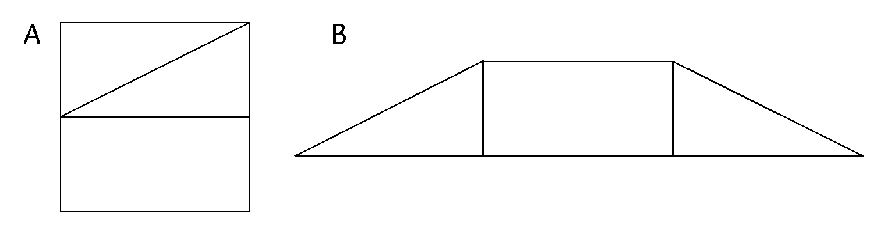
-
Margie plants a vegetable
patch measuring 12 m \(\times\) 8 m.
-
What is the area of the vegetable
patch?
-
She plants carrots on half of the patch,
and tomatoes and potatoes on a quarter of the patch each.
Calculate the area covered by each type of vegetable?
-
How much will she pay to put
fencing around the patch? The fencing costs R38/m.
-
Mr Allie has to tile a
kitchen floor measuring 5 m \(\times\) 4 m. The blue tiles he uses
each measure 40 cm \(\times\) 20 cm.
-
How many tiles does Mr Allie need?
-
The tiles are sold in boxes containing
20 tiles. How many boxes should he buy?
Doubling a side and its effect
on area
When a side of a square is doubled,
will the area of the square also be doubled?
The size of each square making up the
grid below is 1 cm \(\times\) 1 cm.
-
-
For each square drawn on the grid,
label the lengths of its sides.
-
Write down the area of each square.
(Write the answer inside the square.)
-
Notice that the second
square in each pair of squares has a side length that is double
the side length of the first square.
-
Compare the areas of
the squares in each pair; then complete the following:When the
side of a square is doubled, its area

9.5 Area of triangles
Heights and bases of a
triangle
The height (h) of a triangle is a
perpendicular line segment drawn from a vertex to its opposite
side. The opposite side, which forms a right angle with the
height, is called the base (b) of the triangle. Any triangle
has three heights and three bases.
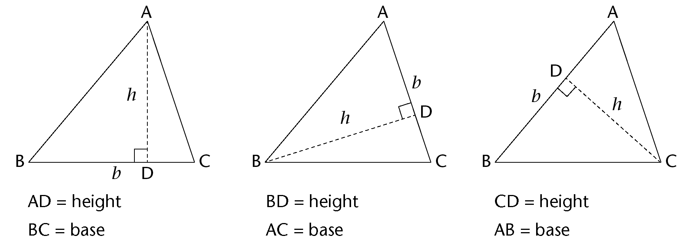
In a right-angled triangle, two sides
are already at right angles:
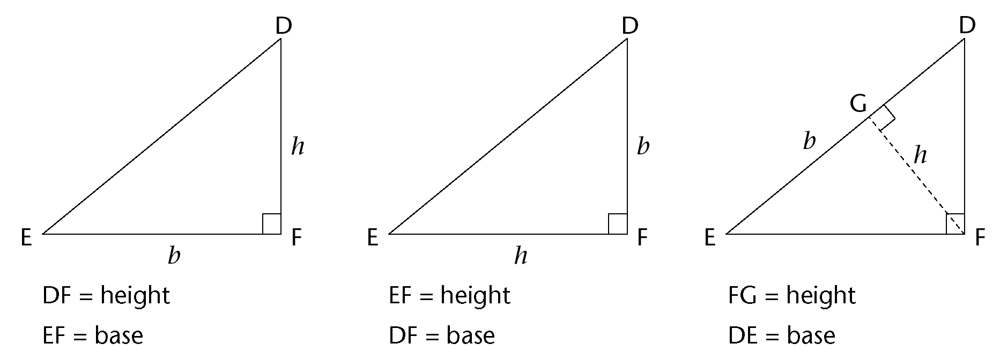
Sometimes a base must be extended
outside of the triangle in order to draw the perpendicular
height. This is shown in the first and third triangles below.
Note that the extended part does not form part of the base's
measurement:

-
Draw any height in
each of the following triangles. Label the height (h)
and base (b) on each triangle.
-
Label another set of heights
and bases on each triangle.

Formula: area of a triangle
ABCD is a rectangle with length = 5
cm and breadth = 3 cm. When A and C are joined, it creates two
triangles that are equal in area: \(\triangle\)ABC and
\(\triangle\)ADC.

\(\text{Area of rectangle} = l \times
b\)
\[ \begin{align} \text{Area of } \triangle ABC \text{(or}
\triangle ADC\text{)} &= \frac{1}{2} \text{(Area of rectangle)}\\
&= \frac{1}{2}(l \times b)
\end{align}
\]
In rectangle ABCD, AD is its length
and CD is its breadth.
But look at \(\triangle\)ADC. Can you
see that AD is a base and CD is its height?
So instead of saying:
Area of \(\triangle\)ADC or any other triangle \(= \frac{1}{2}(l \times b)\)}
we say:
\[ \begin{align} \textbf{Are of a triangle} &= \frac{1}{2} \text{(base} \times \text{height)}\\
&=\frac{1}{2}(b \times h)\\ \end{align}
\]
In the formula for the area of
a triangle, b means
'base' and not 'breadth',
and h means
perpendicular height.
Applying the area formula
-
Use the formula to
calculate the areas of the following triangles: \(\triangle\)ABC,
\(\triangle\)EFG, \(\triangle\)JKL and \(\triangle\)MNP.


-
PQST is a rectangle in each
case below. Calculate the area of \(\triangle\)PQR each time.


-
R is the midpoint of QS.

-
In \(\triangle\)ABC, the
area is 42 m2, and
the perpendicular height is 16 m. Find the length of the
base.
-
Calculate the perimeter
(P) and area
(A) of the
following figures:

-
Figure ABCD is a rectangle: AB = 3
cm, AD = 9 cm and TC = 4 cm.

-
Calculate the perimeter
of ABCD.
-
Calculate the area of ABCD.
-
Calculate the area of
\(\triangle\)DTC.
Calculate the area of ABTD.
10
Surface area and volume of 3D objects
In this chapter, you will
investigate the formulae we can use to calculate the area of
the outer surfaces of cubes and rectangular prisms. Using nets
of these 3D objects will help you to understand how we get to
these formulae. You will then explore the formulae we can use
to calculate the amount of space that solid cubes and
rectangular prisms take up. The amount of space is known as
their volume. You will then come to understand the difference
between the volume and the capacity of cubes and rectangular
prisms. You will also learn about the units that are used to
calculate surface area, volume and capacity, and you will find
out how to convert between different units of measurement.
10.1 Surface area of cubes and rectangular prisms
Investigating
surface area
-
Follow the instructions below
to make a paper cube.
Step 1:
Cut off part of an A4 sheet so that you are left with a
square.
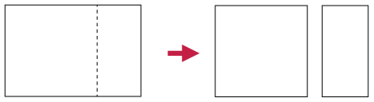
Step 2:
Cut the square into two equal halves.

Step 3:
Fold each half square lengthwise down the middle to
form two double-layered strips.

Step 4:
Fold each strip into four square sections, and put the
two parts together to form a paper cube. Use sticky
tape to keep it together.

-
Number each face of the
cube. How many faces does the cube have?
-
Measure the side length
of one face of the cube.
-
Calculate the area of
one face of the cube.
-
Add up the areas of all the
faces of the cube.
The surface area of
an object is the sum of the areas of all its faces (or outer
surfaces).
As for other areas, we measure surface area in square
units, for example mm2, cm2, m2.
A cube has six identical square
faces. A die (plural: dice) is an example of a cube.
A rectangular prism also has six faces, but its
faces can be squares and/or rectangles. A matchbox is an
example of a rectangular prism.
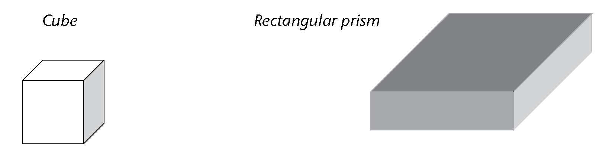
Using nets of rectangular prisms
and cubes
It is sometimes easier to see all the
faces of a rectangular prism or cube if we look at its net. A
net of a prism is the figure obtained when cutting the
prism along some of its edges, unfolding it and laying it
flat.
-
Take a sheet of paper
and wrap it around a matchbox so that it covers the whole box
without going over the same place twice. Cut off extra bits of
paper as necessary so that you have only the paper that covers
each face of the matchbox.
-
Flatten the paper and
draw lines where the paper has been folded. Your sheet might
look like one of the following nets (there are also other
possibilities):

-
Notice that there are
six rectangles in the net, each matching a rectangular face of
the matchbox. Point to the three pairs of identical rectangles
in each net.
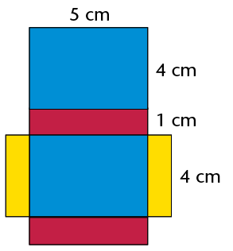
-
Use the measurements
given to work out the surface area of the prism. (Add up the
areas of each face.)
-
Explain to a classmate why you
think the following formula is or is not correct:
Surface
area of a rectangular prism \(= 2(l \times b) + 2(l \times h) + 2(b \times h)\)
-
Here are three different nets
of the same cube.

-
Can you picture in your
mind how the squares can fold up to make a cube?
-
If the length of an
edge of the cube is 1 cm, what is the area of one of its
faces?
What then is the area of all
its six faces?
-
Explain to a classmate why
you think the following formula is or is not correct: Surface
area of a cube \(=6(l\times l)=6l^2)\)
-
If the length of an edge of the cube
above is 3 cm, what is the surface area of the cube?
Working out surface areas
-
Work out the surface areas of
the following rectangular prisms and cubes.

-

-


-
The following two boxes are
rectangular prisms. The boxes must be painted.

-
Calculate the total surface area of box
A and of box B.
-
What will it cost to paint both boxes if
the paint costs R1,34 per m2?
-
Two cartons, which are
rectangular prisms, are glued together as shown. Calculate the
surface area of this object. (Note which faces can be seen and
which cannot.)
-
This
large plastic wall measures 3 m \(\times\) 0,5 m \(\times\) 1,5 m. It
has to be painted for the Uyavula Literacy Project. The wall
has three holes in it, labelled A, B and C, as shown. The holes
go right through the wall. The measurements of the holes are in
mm.
-
Calculate the area of the front and back
surfaces that must be painted.
Remember from the previous
chapter:
1 cm2 = 100 mm2
1 m2= 10 000 cm2
-
Calculate the area of the two side
faces, as well as the top face.
-
Calculate the total surface area of the
wall, excluding the bottom and the inner surfaces where the
holes are, because these will not be painted.
-
What will it cost if the water-based
paint costs R2,00 per m2?
10.2 Volume of rectangular prisms and cubes
2D shapes are flat and have only two
dimensions, namely length (l) and breadth (b). 3D objects have three
dimensions, namely length (l), breadth (b) and height (h). You can think of a
dimension as a direction in space. Look at these examples:

3D objects
therefore take up space in a way that 2D shapes do not. We can
measure the amount of space that 3D objects take up.
Every object in the real world
is 3D. Even a sheet of paper is a 3D object. Its height is
about 0,1 mm.
Cubes to measure amount of
space
We can use cubes to measure the
amount of space that an object takes up.
-
Identical toy building cubes
were used to make the stacks shown below.

-
Which stack takes up the
least space?
-
Which stack takes up the
most space?
-
Order the stacks from the one that takes
up the least space to the one that takes up the most space.
(Write the letters of the stacks.)
The space (in all
directions) occupied by a 3D object is called its
volume.
Cubes are the units we use to measure volume.
A cube with edges of 1 cm (that is, \(1\text{ cm} \times 1\text{ cm} \times 1 \text{ cm})\)
has a volume of one cubic centimetre \((1\text{ cm}^3)\).
-
The figure on the
right shows a rectangular prism made from 36 cubes, each with
an edge length of 1 cm. The prism thus has a volume of 36 cubic
centimetres (36 cm 3)
-
The stack is taken apart and all 36
cubes are stacked again to make a new rectangular prism with a
base of four cubes (see A below.) How many layers of cubes will
the new prism be? What is the height of the new prism?

-
Repeat (a), but this time make a prism
with a base of six cubes (see B above).
-
Which one of the rectangular prisms in
questions (a) and (b) takes up the most space in all
directions? (Which one has the greatest volume?)
-
What will be the volume of the prism in
question (b) if there are 7 layers of cubes altogether?
-
A prism is built with 48 cubes, each
with an edge length of 1 cm. The base consists of 8 layers. What is the height of
the prism?
Formula to calculate volume
You can think about the volume of a
rectangular prism in the following way:
Step 1:
Measure the area of the bottom face (also called the base) of a
rectangular prism. For the prism given here: \(A = l \times b = 6 \times 3 = 18\) square units.
Step 2: A
layer of cubes, each 1 unit high, is placed on the flat base.
The base now holds 18 cubes. It is \(6 \times 3 \times 1\) cubic
units.
Step 3:
Three more layers of cubes are added so that there are 4 layers
altogether. The prism's height (h) is 4 units. The
volume of the prism is:
\[ \begin{align} V &= (6 \times 3) \times 4 \\
\text{or } V &= \text{Area of base} \times \text{number of layers}\\
&=(l \times b) \times h \end{align} \]
Therefore:
\[ \begin{align} \textbf{Volume of a rectangular prism} & = \text{Area of base} \times \text{height} \\
&= l \times b \times h \end{align} \]
\[ \begin{align} \textbf{Volume of a cube} & = l \times l \times l \text{ (edges are all the same length)} \\
&= l^3 \end{align} \]
Applying the formulae
-
Calculate the volume of these
prisms and cubes.
-
Calculate the volume of prisms
with the following measurements:
- l = 7 m, b = 6 m, h
= 6 m
-
l = 55 cm, b = 10 cm, h = 20
cm
-
Surface of base = 48 m2, h = 4 m
- Surface
of base = 16 mm2,
h = 12 mm
-
Calculate the volume of cubes
with the following edge lengths:
- 7 cm
- 12 mm
-
Calculate the volume of the
following square-based prisms:
- side of the base = 5 mm, h = 12
mm
- side of the base = 11 m, h = 800 cm
-
The volume of a prism
is 375 m3. What is
the height of the prism if its length is 8 m and its breadth is
15 m?
10.3 Converting between cubic units
Cubic units to measure
volume
This drawing shows a cube (A) with an
edge length of1 m. Also shown is a small cube (B) with an edge
length of 1 cm.
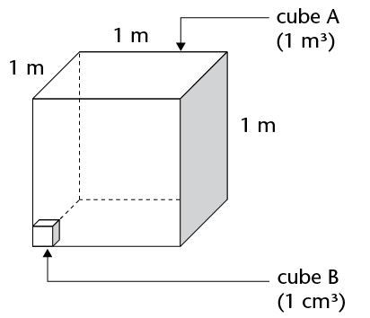
How many small cubes can fit inside
the large cube?
- 100 small
cubes can fit along the length of the base of cube A (because
there are 100 cm in 1 m).
- 100 small
cubes can fit along the breadth of the base of cube A.
- 100 small
cubes can fit along the height of cube A.
\[ \begin{align} \text{ Total number of 1 cm}^3 \text{ cubes in 1 m}^3 &= 100 \times 100 \times 100\\
&= 1 000 000 \\
\therefore 1 \text{ m}^3 &= 1000000 \text{ cm}^3 \end{align} \]
Work out how many mm3 are equal to 1 cm3:
\[ \begin{align} 1 \text{ cm}^3 & = 1 \text{ cm} \times 1 \text{ cm} \times 1 \text{ cm}\\
&= \text{______ mm} \times \text{______ mm} \times \text{______ mm}\\
&= \text{______ mm}^3 \end{align} \]
Cubic units:
1 m3 = 1 000 000 cm3
(multiply by 1 000 000 to
change m3 to
cm3)
1 cm3 = 0,000001 m3
(divide by 1 000 000 to
change cm3 to
m3)
1 cm3 = 1 000 mm3
(multiply by 1 000 to
change cm3 to
mm3)
1 mm3 = 0,001 cm3
(divide by 1 000 to change
mm3 to
cm3)
Working with cubic units
-
Which unit, the cubic
centimetre (cm3) or
the cubic metre (m3), would be used to measure
the volume of each of the following?
-
a bar of soap
-
a book
-
a wooden rafter for a
roof
-
sand on a truck
-
a rectangular concrete
wall
-
a die
-
water in a swimming pool
-
medicine in a syringe
-
Write the following volumes in
cm3:
-
1 000 mm3
-
3 000 mm3
-
2 500 mm3
-
4 450 mm3
-
7
824 mm3
-
50
mm3
-
Write the following volumes in
m3:
-
1 000 000 cm3
-
4 000 000 cm3
-
1 500 000 cm3
-
2 350 000 cm3
-
500 000 cm3
-
350 000 cm3
-
Write the following volumes in
cm3:
-
2 000 mm3
-
4 120 mm3
-
1,5 m3
-
34 m3
-
50
000 mm3
-
2,23
m3
-
A rectangular hole has
been dug for a children's swimming pool. It is 7 m long, 4 m
wide and 1 m deep. What is the volume of earth that has been
dug out?
-
Calculate the volume of wood
in the plank shown below. Answer in cm3.
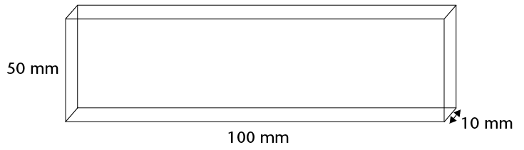
-
The drawing shows the
base (viewed from below) of a stack built with 1 cm3cubes. The stack is 80 mm high
everywhere.
-
What is the volume of the stack?
-
Complete the following:
Volume of stack = area of base
-
Calculate the volume of each
of the following rectangular prisms:
-
length = 20 cm; breadth = 15 cm; height
= 10 cm
-
length = 130 mm; breadth = 10 cm; height
= 5 mm
-
length = 1 200 cm; breadth = 5,5 m;
height = 3 m
-
length = 1,2 m; breadth = 2,25 m; height
= 4 m
-
area of base = 300 cm2; height = 150 mm
-
area of base = 12 m2; height = 2,25 m
10.4 Volume and capacity
The space inside a container is
called the internal volume, or capacity, of the
container. Capacity is often measured in units of millilitres
(ml), litres (ℓ) and kilolitres (kl).
However, it can also be measured in cubic units.
Equivalent units for volume and
capacity
If the contents of a 1
ℓ bottle are poured into a cube-shaped
container with internal measurements of 10 cm \(\times\) 10 cm
\(\times\) 10 cm, it will fill the container exactly. Thus:
\[ \begin{align} (10\text{ cm} \times 10 \text{ cm} \times 10 \text{ cm}) &= 1
ℓ\\
\text{or } 1 000 \text{ cm}^3&= 1 ℓ \end{align} \]
\[ \begin{align} \text{ Since 1 ℓ} &= 1 000 \text{ ml} &\\
1 000 \text{ cm}^3 &= 1 000 \text{ ml} &\text{ [1 ℓ} = 1 000 \text{ cm}^3]\\
\therefore 1 \text{ cm}^3 &= 1 \text{ ml } &\text{[divide both sides by 1 000]}
\end{align}\]
\[ \begin{align} \text{ Since 1 kl} &= 1 000 ℓ &\\
&= 1000 \times (1000 \text{ cm}^3) & \text{ [1 ℓ = 1000 cm}^3\text{]} \\
& = 1 000 000 \text{cm}^3 &\\
& = 1 \text{ m}^3 & \text{[ 1 000 000 cm}^3 = 1 \text{ m}^3\text{]}
\end{align}\]
This means that an object with a
volume of 1 cm3
will take up the same amount of space as 1 ml of water. Or an
object with a volume of 1 m3 will take up the space of 1
kl of water.
The following diagram shows the conversions in
another way:
Conversion is the
changing of something into something else. In this case, it
refers to changes between equivalent units of
measurement.
From the diagram on the previous
page, you can see that:
- 1
ℓ = 1 000 ml; 1 ml = 0,001
ℓ
- 1 kl = 1
000 ℓ; 1 ℓ = 0,001
kl
- 1 ml = 1
cm3
- 1
ℓ = 1 000 cm3
- 1 kl = 1
000 000 cm3 or 1
m3
Remember these
conversions:
1 ml = 1 cm3
1 kl = 1 m3
Volume and capacity
calculations
-
Write the following volumes in
ml:
-
2 000 cm3
-
250 cm3
-
1 ℓ
-
4 ℓ
-
2,5
ℓ
-
6,85
ℓ
-
0,5
ℓ
-
0,5
cm3
-
Write the following volumes in
kl:
-
2 000
ℓ
-
2 500
ℓ
-
5 m3
-
6 500 m3
-
3 000 000 cm3
-
1 423 000 cm3
-
20
ℓ
-
2,5
ℓ
-
A glass can hold up to 250 ml
of water. What is the capacity of the glass:
-
in
ml?
-
in
cm3?
-
A vase is shaped like
a rectangular prism. Its inside measurements are 15 cm \(\times\)
10 cm \(\times\) 20 cm. What is the capacity of the vase (in
ml)?
-
A liquid is poured
from a full 2 ℓ bottle into a glass tank
with inside measurements of 20 cm by 20 cm by 20 cm.
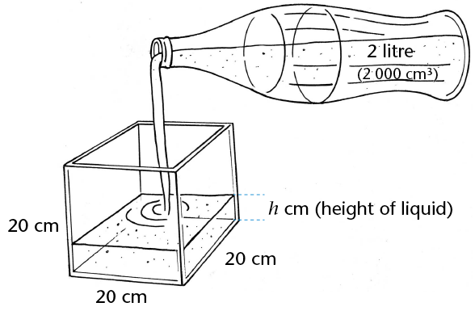
-
What is the volume of the liquid when it
is in the bottle?
-
What is the capacity of the bottle?
-
What is the volume of the liquid after
it is poured into the tank?
-
What is the capacity of the tank?
-
How high does the liquid go in the
tank?
In question 5 above, you should have
found the following:
\[ \begin{align} \text{ Volume of liquid in tank} &= \text{Volume of liquid in bottle}\\
20 \times 20 \times h \text{(liquid's height in tank)} &= 2 000 \text{ cm}^3 \\
h & = \frac{2000}{(20 \times 20)}\\
&= 5 \text{ cm} \end{align} \]
Note: The capacity of the tank
is 20 cm \(\times\) 20 cm \(\times\) 20 cm = 8 000 cm3 (8 ℓ).
The
volume of liquid in the bottle is 2 000 cm3 (2 ℓ).
-
Do the following unit
conversions:
-
2 348 cm2 = ______ m2
-
5,104 m2 = ______ cm2
-
1 m3 = ______ kl
- 250 cm3 =______ ml = ______ ℓ
- 0,5 kl = ______ ℓ = ______ ml
- 6,850 ℓ = ______ ml = ______ cm3
-
A rectangular prism measures 8 m
\(\times\) 4 m \(\times\) 3 m. Calculate:
- its surface area
- its
volume
-
A boy has 27 cubes, with
edges of 20 mm. He uses these cubes to build one big
cube.
-
What is the volume of the cube if
he uses all 27 small cubes?
-
What is the edge length of the
big cube?
-
What is the surface area of the
big cube?
-
A glass tank has the following
inside measurements: length = 250 mm, breadth = 120 mm and
height = 100 mm. Calculate the capacity of the tank:
-
in cubic centimetres
-
in millilitres
-
in litres
-
Calculate the capacity of each of
the following rectangular containers. The inside measurements
have been given.
|
Length
|
Breadth
|
Height
|
Capacity
|
|
(a)
|
15
mm
|
8
mm
|
5
mm
|
______
cm3
|
|
(b)
|
2
m
|
50
cm
|
30
cm
|
______
ℓ
|
|
(c)
|
3
m
|
2
m
|
1,5
m
|
______ kl
|
-
A water tank has a square base
with internal edge lengths of 150 mm. What is the height of the
tank when the maximum capacity of the tank is 11 250
cm3?
Revision
You should not use a calculator for
any of the questions in this chapter, unless you are told to
use one. Do show all your steps of working.
fractions
-
Calculate the following:
- \(3\frac{2}{5} + 2\frac{4}{5}\)
- \(4\frac{1}{3} - 3\frac{5}{6}\)
- \(\frac{13}{4} - \frac{4}{3}\) (give your answer as a mixed number)
- \(2\frac{1}{3} \times 1\frac{1}{14}\)
-
Three quarters of a number is
63. What is the number?
-
Write down all the fractions
in this list that are smaller than one eighth: \( \frac{2}{8}; \frac{1}{7}; \frac{1}{9}; \frac{2}{17}\)
-
The Stone Hill Primary
U13A soccer team had a good season, winning five sixths of its
matches. If the team played 12 matches that season, how many
were lost?
-
For each sequence
below, write down whether it is increasing, decreasing, or
neither:
- \(\frac{1}{3}; \frac{1}{4}; \frac{1}{5}\)
- \(\frac{1}{3}; \frac{2}{6}; \frac{3}{9}\)
- \(\frac{1}{6}; \frac{2}{7}; \frac{3}{8}\)
- \(\frac{4}{3}; \frac{5}{4}; \frac{6}{5}\)
-
In a survey of 80
Grade 7 learners, 60% felt that Justin Bieber was the best
singer. How many learners think he is the best singer?
-
Moeketsi collected
R450 of the total of R3 000 collected by his class for the ABC
for Life charity. What percentage of the total did Moeketsi
collect?
-
BestWear had a sale on
all its dresses. What was the percentage reduction on a dress
that used to cost R600, but on sale was going for R480?
the decimal notation for
fractions
-
Re-order the following numbers
from smallest to largest:
-
0,04; \(\frac{4}{10}\); 14%; 0,4%
-
0,798; 0,789; 0,8; 0,79
-
What is the value of the 7 in
4,5678? Write your answer as a common fraction.
-
Fill in the missing numbers in
the boxes below.
-
-
-
Join all the pairs of
numbers that multiply together to give 1. The first has
been done for you. Note that you will not use all the numbers
on the right-hand side.
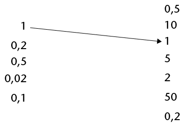
-
Calculate the following:
- \(5,673 - 3,597\)
- \(4,85 \times 1,2\)
- \(4,825 \div 5\)
-
A certain portion of
the shapes below are shaded. Write each portion as a common
fraction (in simplest form), decimal fraction and
percentage.

-

relationshipS BETWEEN
VARIABLES
-
-
Here is a number
sequence: 1; 4; 10; 22; ______; ______
The rule for creating the
number sequence is "times 2, add 2". Write down the next two
numbers in the number sequence.
-
Here is another number
sequence: 100; 50; 25; ______
Write down, in words, the rule for creating
this number sequence.
-
Use the given rule to
calculate the missing values and/or determine the rule.
-

-


-

-
-
There is a simple relationship
(multiply by ...) between the \(y\) values
and the \(x\) values in the table. Find it and then fill in
the missing values.
|
\(x\)
|
0,1
|
0,3
|
0,6
|
2,5
|
3,2
|
|
|
\(y\)
|
4
|
12
|
24
|
|
|
164
|
-
Write in words the rule that describes
the relationship between the \(x\) values and the \(y\)
values.
-
-
There is a simple relationship (add
...) between the \(x\) values and the
\(y\) values in the table. Find the relationship and then
fill in the missing values.
|
\(x\)
|
\(\frac{1}{3}\)
|
\(\frac{5}{3}\)
|
\(\frac{7}{3}\)
|
\(9\frac{2}{3}\)
|
\(\frac{5}{6}\)
|
|
\(\frac{3}{4}\)
|
|
\(y\)
|
\(\frac{2}{3}\)
|
2
|
\(\frac{8}{3}\)
|
|
|
15
|
\(\frac{13}{12}\)
|
-
Write in words the rule by which the
missing \(x\) and \(y\) values can be
calculated.
-
The rule used to
describe the relationship between the \(x\) values and
\(y\) values in the table is "double the \(x\)and then
subtract 2". Use the rule to find the missing values and fill
them in.
|
\(x\)
|
4
|
8
|
12
|
15
|
|
|
|
\(y\)
|
6
|
14
|
|
|
42
|
100
|
perimeter and area of 2d
shapes
-
-
A rectangle has an area of 48
cm2 and a length of
8 cm. How wide is it?
-
A different rectangle has an area of 72
cm2, and is twice
as long as it is wide. Determine the dimensions of this
rectangle.
-
A triangle has a base of 10 cm and an
area of 20 cm2.
What is the height of the triangle?
-
What is the length of the side of a
square that has an area of 144 cm2?
-
An equilateral
triangle with sides of 8,4 cm and a square have the same
perimeter. Determine the length of the side of the square.
-
Calculate the area of the
shaded figures.
-
DEFG is a rectangle. Dimensions of the
sides are as indicated.
-
ABCD is a rectangle. AB = 5 cm and FC =
2 cm. Give your answer in square millimetres. (You may use a
calculator in this question.)
-
The garden of Mr and
Mrs Mbuli is shown below, not to scale. There is a hedge
all around the garden, except for the 2 metre wide gate (from A
to B). The shaded area is grassed (the rest has trees, shrubs
etc.).
Garden Dream quoted the Mbulis R5 per square metre to mow their
lawn and R10 per metre to trim their hedge. VAT is included in
these prices. What was the total amount that Garden Dream
quoted?
surface area and volume of 3d
objects
-
How many litres
of water will a fish tank with inside measurements of \(1,2 \text{ m}
\times 60\text{ cm} \times 70 \text{cm}\) hold, if it is filled to the
brim?
-
A rectangular prism
has a length of 4 cm, a width of 10 cm and a volume of 240
cm3. What is the
height of the prism?
-
A rectangular prism has a certain volume. Which of the
following will double the volume of the prism? Tick the correct
answer(s).
☐ Doubling all the dimensions
☐
Doubling the length only
☐
Doubling the length and the width, and halving the height
☐ Doubling the length and halving the width
and keeping the height unchanged
-
Look at the diagram below of a
rectangular prism made out of 16 cubes.
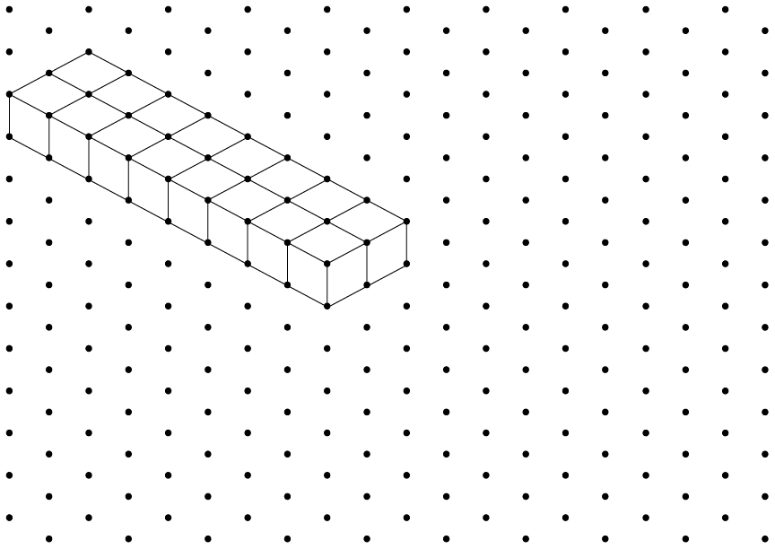
Draw on the same grid two
different rectangular prisms with the same volume as the one
shown.
-
The total surface area of a
cube is 150 cm2.
Determine the volume of the cube.
-
The volume of a cube is 64
cm3. Determine the
total surface area of the cube.
-
In order to save water
when flushing the toilet, Mrs Patel added a solid brick to the
cistern. The internal dimensions of the cistern are 30 cm
\times 30 cm \times 10 cm, and the brick together with other
internal mechanisms have a volume of 1 000 cm3.
-
Calculate how many litres of water the
cistern holds if the water fills up to 5 cm below the top of
the cistern.
-
Suppose the Patel family flush the
toilet an average of 12 times a day. Use your calculator to
determine how many kilolitres of water they will use by this
means in one year.
-
Njabulo wishes to
varnish the outside of a wooden chest that is in the shape of a
rectangular prism. The bottom of the chest does not need to be
varnished as it is on the ground. The chest is 1,5 m long, 50
cm wide and 80 cm high. Determine, in square metres, the total
surface area that will need to be varnished.
-
The image below
shows the net of a rectangular prism drawn on a grid. If each
block on the grid is a square with a side length of 1 unit,
calculate:
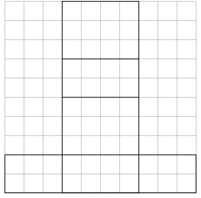
-
The total surface area of the prism
-
The volume of the prism
Assessment
In this section, the numbers
indicated in brackets at the end of a question indicate the
number of marks that the question is worth. Use this
information to help you determine how much working is
needed.
The total number of marks allocated to the
assessment is 60.
Note: Do not use your calculator!
-
\(\frac{1}{4}\) is half of \(x\). What is the value of
\(x\)? (2)
-
The diagram alongside
shows a square made up of blocks. Eight of these blocks have
been shaded. Write, in its simplest form, the fraction of the
square that is shaded. (2)
-
Calculate the following:
- \(2\frac{2}{3} \times 1\frac{1}{2}\)
- \(\frac{13}{10} - \frac{5}{8}\)
-
Mrs Baker
has baked a cake. She has some ladies around for tea and they
eat half the cake. Her son John eats a quarter of the rest of
the cake. What fraction of the cake is left? (2)
-
The price
of petrol has risen from R8 per litre to R12 per litre over the
past 2 years. Determine the percentage increase in the price.
(2)
-
The Cupidos
moved home. In the move, 5% of their crockery got broken. They
have 57 pieces of crockery left (unbroken). How many pieces
broke in the move? (2)
-
\(\frac{15}{400} = 0.0375; \frac{17}{400} = 0.0425; \frac{19}{400} = 0.0475\)
Using the above information, write down the decimal equivalents
of the following fractions (3):
- \(\frac{21}{400}=\)
- \(\frac{22}{400}=\)
- \(\frac{13}{400}=\)
Multiply 56,76147
by 100 and round off your answer to two decimal places. (2)
Buti goes
to the store and buys two cooldrinks at R7,50 each and three
packets of chips at R5,95 each. If he pays with a R50 note, how
much change should he get? (4)
Class 7A
at Grace Primary School collects some money for 3 charities. If
the total they collect is R823,80, and the money is allocated
equally to each charity, how much will each charity receive?
(2)
Use the given rule
to calculate the missing values: (3)

-
There is a simple
relationship (add ...) between the values of
\(x\) and those of \(y\). Find the relationship and then
write down the missing values into the table. (2)
|
\(x\)
|
0,15
|
0,76
|
0,99
|
1,71
|
|
|
\(y\)
|
1,4
|
2,01
|
2,24
|
|
18,93
|
-
Write in words the rule by
which the missing \(x\) and \(y\) values can be
calculated. (1)
The total
area of the rectangle shown is 112 cm2. Determine the lengths of
\(a\) and \(b\). (3)
Below is a
rectangle, with dimensions as shown. A square has the same
perimeteras the rectangle below. How long is the side of the
square? (2)
The
diagram shows a rectangle divided into a triangle and a
trapezium. Calculate the shaded area, giving your answer in
mm2 (5).
The
length and width of a rectangle is doubled.
-
Tick the statement that is correct:
☐ The perimeter of the rectangle stays the
same.
☐ The
perimeter of the rectangle doubles.
☐ The perimeter of the rectangle
increases but it is not possible to say exactly by how
much.
-
Tick the statement that is correct:
☐ The area of the rectangle stays the
same.
☐ The area of the rectangle doubles.
☐ The area of the rectangle triples.
☐ The area of the rectangle
increases to 4 times what it was before.
-
Explain your answer to part
(b). (3)
A
rectangular prism has a volume of 24 cm3. In the table below, write
four possible dimensions that the prism may have. One possible
combination has already been added. Note: do not consider, for
example, a prism with length 6 cm, and height and width 2 cm to
be different. (4)
The inside
of the boot of a car is in the shape of a rectangular prism,
with length 1,2 m, width 70 cm and depth 40 cm. Determine the
capacity of the boot in litres. (3)
The volume of a
cube is 27 cm3.
Determine the surface area of the cube. (3)
The length
and breadth of a rectangular prism are both 4 cm, and its
volume is 48 cm3.
Determine the height of the prism. (2)
Consider this net:

-
What is the name of the solid created if
this net is folded?
-
Which corner will A touch
when the solid is created: B, C or D? (2)